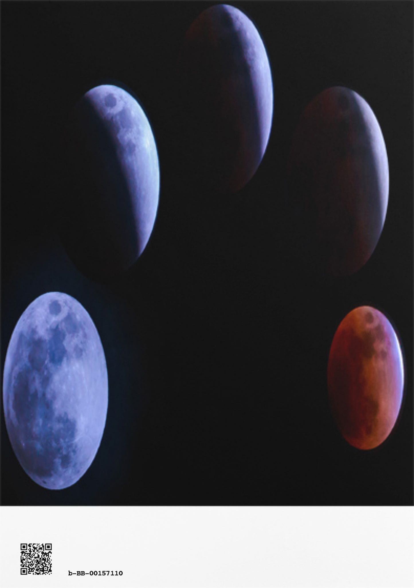

| ''夢''日記 ーハンモックで見た夢ー | |
| DAVIDE | |
| (2018) | |
夢をまとめた本。
この本はBCCKSで発行された
『''夢''日記 ーハンモックで見た夢ー』
著 者：DAVIDE
発 行：
のEPUB版です。
EPUB版は、BCCKSの紙面とレイアウトや表示が異なります。
BCCKS版の閲覧は、以下のURLをご覧ください。
http://bccks.jp/bcck/157110/info

Powered byBCCKS
───────────────────────
''夢''日記 ーハンモックで見た夢ー
DAVIDE
DAVIDE出版
───────────────────────
はじめに
本書は、
私が、毎日の眠りの中で見た
「夢」を
【''夢''日記】
として記録し、まとめた本である。
「夢の内容だけを読みたい」という方は、この項を読み飛ばしてもらっても構わない。
ただ、
《夢を日記として記録する》という、風変わりな試みを行ったのには、自分なりの理由がある。
本著は、
自分が見た夢を、そのまま描いたものなので、難しいことは何もない。
しかし、
夢の世界をより深く感じるためにも、この項を読んでから、本編に入って頂きたいと願う。
___________
まず、
このような試みを思いついたきっかけは、
《ハンモック》で眠る
ようになったことである。
2016年の暮れ、
アウトドア好きな私が、普段から、
「布団や、ベッドではなく、
《ハンモック》で寝たい」
と思い立ち、インターネット通販にて購入し、自宅に設置した。
そして、
2017年から、
毎夜、《ハンモック》で就寝
するようになった。
日常的に、ハンモックを寝具にしている人は、そういないだろうし、自分も初めてだ。
しばらく、そういった生活を続けるうちに、「あること」に気が付いた。
それは、
【夢を見る】ことが増えた
ということだ。
それが、そもそもの、きっかけである。
もともと、
夢は、よく見るほうではあったと思うが、布団やベッドで寝ていた時よりも、その頻度は格段に増え、たくさんの夢を見るようになった。
また、
今までは、起床した後に見た夢の内容をまったく覚えていないことも多かったが、おぼろげながら記憶できていることが増え、中には、はっきりと覚えているものも多くなった。
こういったことが増える中で、
起床してから、夢で見たことを思い返す機会も、自然と増えていった。
様々な夢を見た。
内容は様々だが、
不条理で、シュールで、奇妙で、
不可思議なものばかりだった。
そこでは、
現実には、あり得ないことが、さも、当然のことのように起こっていた。
ありえない状況、あり得ない時間軸、あり得ない場所、あり得ない人物、あり得ない組み合わせ...
実際の人物や、場所、出来事がそのまま夢に登場することもあるが、みんな、どこかおかしく、それを指摘する者もいない。
何よりも、それを疑問に思わず、受け入れている自分が、最も、奇妙で不可思議だ。
例えば、自宅の扉を開けると、それが、自分が昔に通っていた小学校に繋がっており、高校の頃の同級生が水着で授業を受けていても、それを疑問に思わないか、思っても、夢の世界の常識で納得させられてしまう。
夢の中でも、感情は揺れ動き、自分の意志をもち、合理的な判断で行動しているつもりではいる。
しかし、ありえない役割や設定を与えられ、どんなに奇妙でも、それを当然のごとく受け入れ、もうひとつの世界に存在している。
それは、
いくら考えても答えが出ない、理屈が通じない、不条理で、不可思議なイメージの世界
だった。
こういったことが増える中で、私は、''あること''を思うようになった。
「夢」を、
作品のアイデアに使えないだろうか？
創作活動を生業にしている自分にとって、アイデアやイメージという、作品のタネを生み出すことは、時に、多大な労力や苦しみを伴う。
そう考えれば、
寝ている間に、
アイデアや、イメージ、ネタを提供してくれる
というのは、願ってもない話だ。
言ってみれば、
「夢」は、
《アイデアが湯水の如く、湧き出る泉》
のようなものだ。
しかも、
一生懸命、考えたり、頭を捻る必要もない。
何の努力も、苦痛も、負担もなく、ただ寝ているだけで良いのだ。
そのうえ、
起きている時には、どう考えても思いつかないような、不条理で斬新なものが多い
とくれば、
より、期待感は高まる。
夢は毎日、見られるものではないし、
作品のアイデアとして、使えない内容のものもあるが、睡眠という、休息時間に勝手に提供してくれるものなので、得はあっても、損はない。
使えないものは、使わず、使える夢だけ、採用すれば良いだけの話である。
昼間は、一生懸命に創作活動に取り組み、夜に疲れて眠っている間に、「夢を提供してくれるかもしれない」という''オプション''まである。
「夢」というものは、
【創作のアイデアを得る方法】として、非常に有用なのではないか。
思えば、
自分が敬愛する大画家「ダリ」も、''スプーンを咥えて寝る方法''で、通常では思いつかないような、夢の世界のイメージを描いた手法
が、あまりにもに有名だ。
また、
自分を音楽・ファッション・カルチャーに目覚めさせてくれたロックバンド「L`Arc~en~Ciel」の『瞳の住人』という名曲は、作曲者のtetsuyaが夢の中で作曲した
と語っている。
さらに、
後者に関しては、作詞を担当したボーカルのhydeが「歌詞も夢の中で書きたかったなぁ」と語ったという後日談がある。
こういったhydeの発言は、冗談ではあるだろうが、半ば本気であるとも言えよう。
それだけ、創作活動において、作品を世に出すということは、''生みの苦しみ''を伴う作業なのである。
特に、
その作品の軸となる、最初のアイデアを思いつくこと・生み出すことは、重労働であり、同時に、それは、創作物のクオリティーや、売上を大きく左右する核となる重要なものだ。
斬新で、新鋭、個性的な作品を生み出そうとすれば、その負担はさらに増し、才能も努力も、運も必要となる。
こういった難しい作業を、夢の中で行えるというのは、アーティストや、クリエイター、作家、ミュージシャンをなどをはじめ、多くの表現活動を行う者にとって、ある種の''究極の理想''であるとも言えるだろう。
もちろん、
実際に制作する作業を夢の中で行うことはできず、いくら優れたアイデアであっても、それを形にすることの方が時間と労力、素養を必要とされる。
ただ、
起きている時に、
いくら考えても思いつかないようなアイデアや、違法なクスリでもやらない限り、
体感できなような、カオスな感覚を、
寝ている間に、夢の中で得られるということは、
創作者にとって、非常に有益で魅力的なもの
であると言える。
しかも、
人間は人生の約1/3の時間を寝て過ごしている
と言われるほど、睡眠に時間をとられている。睡眠は、生きるためには、絶対に必要不可欠な時間である。
しかし、
楽しい時、期限に追われている時、本気で何かに臨んでいる時は「眠る時間もない」「寝ないでも平気な体がほしい」、そう思ったことがある人も少なくないだろう。
このように、
睡りの時間は、生命の維持と、精神の安定のために、
絶対に必要なものでありながら、
何もできない・何も生み出さない
''無駄な時間''
であるとも言える。
この
''無駄な休憩時間''に、
『無料で、努力することもなく、ただ寝ているだけで、斬新なアイデアを提供してくれる』
このような
''夢のようなサービスを、してくれるのが夢''
なのである。
「寝ながら、報酬を貰える」
という、誰もが一度は考える、理想の労働に近いものかもしれない。
しかも、
夢は、映像と五感(のつもり)で体感できるため、小説・シナリオのアイデア、デザインやアートの元イメージ、ミュージックビデオや映画の原案、音楽や作詞のタネ、としてなど、様々なジャンルの創作物に有用である。
一方で、
夢は、「日々の自分の経験や思考が反映されているもの」という説もある。
そうであれば、厳密には、夢からアイデアを得ることは、''無料で、何の努力なくできるもの''ではないのかもしれない。
そういった意味では、むしろ、
''日々の努力の賜物''
とも言えるだろう。
しかし、それは、
自分の中にありながら、
まともな意識が働いている状態では、引き出すこと、生み出すことが
できなかった世界である。
それを、
体感できるということは、
極めて有意義だ。
しかも、
自分が見た夢は、
世界中で、自分だけしか知らない。
完全なオリジナルのものであり、
他の人間が、同じ夢を見ている可能性は極めて低い''特注品''である。
作品のアイデアとしては、
うってつけだ。
「大金が手に入った」というような、多くの人が見たことがあるような夢もあるが、創作物のアイデアに使おうと考えるような夢は、こういった、よくあるものではないはずである。
また、
多くの人間が見たことのあるような夢であっても、その舞台設定や、そこに至る経緯は恐らく、同じものは、ひとつもないだろう。
このように、
生きていく上で、絶対に避けられない長い眠りの時間、
''長く、無駄な睡眠時間''を、【アイデアを得る時間】として利用してしまおう。
もっと率直に言えば、
『寝ながら、''飯のタネ''』
を得てしまおう
。
私はそう考えた。
そのため、まずは、
見た夢を記録する
【夢日記】をつけることにした
。
こうしておけば、
いつでも、それを見返して、''飯のタネ''を
得ることができる。
昼寝も含めて、夢を見た時には、起床して、すぐに記録することにした。
『楽する努力は惜しまない』
それが、
DAVIDEという男である。
しかし、
実際に行ってみると、日々の中で、起床した瞬間に夢を書き留めるというのは、思った以上に負担が大きかった。
それは、
単純に、貴重な朝の時間を使うことや、私が、こういう仕事をしていながら筆不精であること、寝起きの頭と体で''日記を書く''という作業が大変だったという点も大きい。
しかし、
それ以上に、夢が記憶から忘れ去られていく速度が異様に早く、書いていくそばから、抜け落ちていく。
起床した瞬間や、メモを開いた瞬間に夢の内容をほとんど忘れてしまうも多く、感覚だけがあって、言葉にできなものも少なくなかった。
当初、【夢日記】は
「楽して、アイデアを得たい」
という''不純な動機''からスタートした試みではあった。
しかし
そういった日々を続ける中で、
いつしか、
「夢」という不可思議な世界に、
純粋に惹かれていった。
【夢日記】をつけはじめて、2年近くが経過した。
忘れてしまったり、書き留め損ねたものも、
少なくなかった。
そもそも、
夢を見なかった(と思う)日も、案外、多く、
思ったよりは、ページが増えていかなかった。
それでも、
結構な分量が溜まってきたこともあり、
整理がてら、
それらを読み返してみた。
改めて読んでみると、それは、
あまりにも不条理で、カオスで、意味不明で、不可思議なものだった。
それでいて、子供の頃に読んでもらった絵本のように、未知の世界ながら、どこか懐かしいような体温を感じるものであった。
これまでは、
自分の【夢日記】を、
《誰にも知られることのない、楽してアイデアが湧き出す、門外不出の秘密のネタ帳》
として
考えていた。
しかし、
改めて読み返した時、
これまでとは''ちがう想い''を抱いた
。
「【夢日記】を
眠らせていてはもったいない。」
「自分だけの秘密にするのではなく、誰かに知ってほしい。」
「作品として世に出したい。」
もし、
自分の夢を公開して、
誰かが、夢の内容をヒントにして、何かを創ったとしても、それは、それで良いだろう。
そんなモノ好きは、むしろ、アッパレではないか。
純粋にそう思った。
それだけ、
【夢】には''不思議な魅力''があった。
小説や、映画、ミュージックビデオなど、
色々と使えると考えたが、
まずは、
自分が見た夢を、なんの加工も、フィクションも加えず、
ありのままの姿で紡いでいきたいと思った。
そのため、まずは、
純粋に、「夢」の日記メモをまとめた、
【夢日記】
を出版することにした。
それが、本著である。
小説や新書のように、起承転結があり、理屈や常識が通用する、整合性のある内容ではないかもしれない。
自分で読んでいても、面白いのか、つまらないのか分からない。
ただ、
そこに広がっているのは、面白い話を書こうとか、売れるもの、感動させる作品を創ろうと、意識して書いたものない。
どれだけ努力しても、絶対に生み出すことのできない、''究極のノンフィクション''
【無意識の世界】【もうひとつの世界】
である。
読み物として、不条理で不可思議な世界を感じながら読むのも良し、人の夢を覗くような好奇心や背徳感を感じながら読むのも良し、自身が見たことのある夢を思い起こして、比較しながら読むのも良いと思う。
敢えて、例を挙げたが、好きに読んでほしい。
自分で言うのも何だが、
あなたが思うように、
私の夢の世界を覗いてみてほしい。
～本編を読む前に～
冒頭で述べた通り、
「夢」は理屈や整合性のない不条理で不可思議なイメージの世界である。
場面がいきなり飛んだり、ありえないことが起こったり、それを当たり前に受け入れていたり、妙な自己意識があったりする、無意識の世界である。
その独特の感覚が失われないよう、
本著では、夢の内容が、あまりに突飛で意味不明でも、なるべく、ありのままの、見たまま、感じたままを描くように努めた。
起床した瞬間に書き留めた夢のメモは、
その内容を忘れないように急いで書いたり、夢の世界を言葉にするのが難しかったり、記しているそばから抜け落ちていったりして、必ずしも、小説や、シナリオのような、辻褄の合う、分かりやすい良文でないものが、少なくない。
また、
どうしても、内容が思い出せないものや、自分の書いたメモの意味が分からないという場合も存在するが、夢の独特な感覚や、感情をそのまま伝えたいため、起床して、すぐに書き留めたメモを、可能な限り、そのまま記載した。
頭に浮かんだこと、見たもの、感じたままの世界を純粋に描くように努め、曖昧な部分、いきなり場面が飛んだ部分、不条理で不可思議ことについても、論理的に考察することを避けた。
稚拙な表現や、悪文も、
なるべく、そのまま記し、解説や、修正、再構成は、必要最低限に留めた。
理屈や常識、現実の時間軸や状況では、意味が通らない、あり得ないようなことであっても、見たままの世界を描いた。
また、
どうしても、メモの内容を思い出せない場合や、夢の感覚を上手に言葉にできない場合であっても、無理に繕うことをせず、ありのままを記載した。
このような、
未完成で、混沌とした部分も含め、偽らざる「無意識の世界・感覚」を感じてほしい欲しい。
【本書の読み方】
次項より、本編に入るが、本著の見方を説明しておきたい。
～夢日記の読み方～
【凡例】
■2017年1月1日 23時頃 夜の就寝■
(※夢を見た日付・時間・場所・状況を記載)
〈風邪をひいて高熱がでていた〉
(※特別な出来事があった場合は記載)
宝くじが当たった。
しかし、街は子供時代のものに
変わっており、交換所が見つからない。
誰かに場所を聞いたら
自分が萎んで小さくなった。
(※夢の内容を記載)
＿＿＿＿＿＿＿＿
《留意してほしいこと》
●場所について、
特に、記載がない場合は、
【自宅のハンモックで、夜に就寝】
したものである。
●いきなり場面が飛んだり、
不条理・不自然に繋がった場合も、
それをそのまま記載している。
●基本的に、
夢の内容の本文が終わったところが、夢の最後の場面である。
『起床した・起きた・目覚めた』
などと、書かれていない場合も、その後に起床している。
●1回の睡眠の中で、
夜中に目が覚めたり、二度寝などで、
《内容の異なる、複数の夢》を見た場合は、
〈１つ目の夢〉〈２つ目の夢〉...というように、分けて記載している。
●夢日記 2017年●
＿＿＿＿＿＿＿
毎日、
ハンモックで就寝するようになった、
2017年から、夢を書き留める【夢日記】を
つけはじめた。
思いつきで始め、やり方も変えていったので、日記の付け方や、夢の描き方も
時々によって変わっている。
特に、
始めたばかりの頃は、日付や状況を書き忘れたり、自分が書いたはずのメモの内容を
後から思い出せないということもあった。
こういった、
アナログで、ダイレクトな部分も含め、
フィクションの物語にはない、
未完成な【無意識の感覚】を
覗いて頂ければ幸いである。
‡
‡
‡
‡
‡
‡
‡
‡
‡
‡
‡
■2017年 冬～春頃 日時不明■
ポップな西洋の絵本のようなガサガサとした、ざっくりとした色合いと、風景が広がっている。なんとなく春のような、暖かな昼下がりのような気がする。
アメリカか、ヨーロッパの田舎の様な風景。絵の具で書いたような、晴れた空の下、ライ麦畑のような景色が広がっている。
俺は、農道の前に停めてある収穫用らしき白いトラックの荷台に乗っている。ここは、自分の畑なのかどうなのかは、よく分からない。トラックは軽トラくらいのサイズのようで、荷台の方しか見えず車種は分からない。
自分は、作業の休憩中のように、靴下を脱ぎ、足にできたマメを眺めている。痛いとか、違和感などは、特に感じていないと思うが、マメを潰して、中の液体を出そうとした。
(※現実世界でも、足のマメは、針で潰して治すことが多く、そうしたのだと思う。)
何を使ってマメを切ったかは覚えていない。童話の物語にでてくるような装飾されたナイフだったような気がする。
マメを切ると中から、五目あんかけが溢れ出てきた。具材も入っていて、切り身のイカのようなものも見えた。
ぶわっと堰を切ったかのように溢れ出てくる。
五目あんかけは、足のマメの中に入っていたであろう量を遥かに超え、止まることなく出続けて、トラックの荷台からも溢れ出した。
俺は、「ああ、マメの中の液は、あんかけだったのか」と思った。
■2017年 冬～春頃 日時不明■
(実在の小中学校の同級生で、少年野球チームや、同じ野球部に所属してキャプテンを務めた)Iが夢に出てきた。
中身は忘れた。懐かしかったような気がする。
■2017年 冬～春頃 日時不明■
自分の所有する深緑色のレトロなミニスクーターが切られる。
(実際に所有している「SUZUKI・ヴェルデ」だと思う。)
シートとかではなく、ボディが切断されたような気がする。
どこかの公園で起床し、寝坊だと思った。
実際に、起きたら自宅のハンモックで、夜明け前だった。
■2017年5月1日 ６時～6時半頃 起床後の二度寝■
自宅から二時間程度の田舎町にある祖父母宅へいく。
旅行用バッグ忘れたことに気付いた。
外に停めてあるピンクシルバー色の「NISSAN・マーチ」
(実際は、祖母の車だが、自分が乗ってきた気がした。)の中に、本来、持ってくるはずだった旅行用バッグに似た紺色のリュックが入っていた。
その後は、色々あったが忘れた。
■2017年5月10日 16時頃 うたた寝■
学校の教室らしい。実際に自分の通った高校の制服の生徒と、私服の生徒が混ざっている。
(こういった状況は実際にはあり得ないし、中学校の同級生と、高校の同級生と、見知らぬ生徒が混ざっている。)
三人がけの机の真ん中に、座っており、隣には小さい頃から知っている同級生の女が隣に座っている。その子は私服で、20代の大人の年齢くらいだった気がする。白い長ズボンを穿いていて、俺は、その子の太ももに手を置いている。
教室を見渡すと、高校の同級生・Y
(今でも仲良くしている友人のひとり)が、実際の高校入学当時の席順の付近に座っていた。
先生が教室にはいってきた。どんな先生だったかは、覚えていない。
先生が入ってきて、おしゃべりをやめたり、遊びを中断するように、その同級生の太ももから手を離して前に向きなおると、真後ろの制服の女生徒が、なぜか、横の席にきた。
いつの間にか、先程、入室してきた先生とは別の先生
(S先生。実在の人物。当時のアルバイト先の第8児童クラブの責任者であるが、教師ではなく、生徒の立場で接したこともない。60歳くらいの細身の女性。上品で芯が強いが、親しみやすい感じ))らしき人が、 なぜか後ろの黒板を使い、何かクラスを褒めていてくれた気がする。
(※現実に、当時、自分は児童クラブでアルバイトをしていた。本部から派遣される形で、日替わりで、場所が異なる、いくつかのクラブに勤務していた。)
■2017年5月17日 夜の就寝中 早朝■
高い山の渓谷沿いの露天風呂にいる。
やたら四角く、細長い造り。
細長いメインの風呂と、先端の方に、別の小さな風呂もある。
渓谷沿いのため、空は青空だが、太陽は見えないようだ。
深い山々に囲まれてはいるが、山同士の距離は遠く、解放感がある。
自分以外には、おばさんと、幼稚園から小学校低学年くらいの女の子ふたりが入っていた。
俺には、特に反応しない、気付いていない？
男湯と女湯をまちがえた？俺はそう考えて考えを巡らせた。
混浴ではないという感覚があった。
気付かれないように、静かに移動するなど、実際にこのようなことが起こったとしたら、想像できるであろう感覚があり、それを実際に行動に移してた気がする。
どうするべきか、少し、あせりながら考えている。
しかし、一方で、平気なような気もした。
女が多い店に来て、「ちょっと居づらいな」という程度のような認識だったような気もした。
■2017年6月18日 朝 起床後 二度寝■
夢の中でも寝ていて、寝起きからスタート。
夢が一気にきた。
10分くらいなのに1時間くらい寝ていたような感覚。
実際に起床した時間が、夢の中の時計でも起きる時間だった。
■2017年 6月頃 日時不明■
どこかの温泉風呂に、うんこが浮いている夢を見た。
周りの家族はあまり騒がない。変な感じ。
(実際に、スーパー銭湯の露天風呂に、うんこが浮かんでいて、その風呂に入りかけた経験がある。)
■2017年 6月頃 日時不明■
見たことのない音楽番組を見ている。
実家の和室のテレビで、それを見ているような気もしたし、ちがったかもしれない。
テレビ画面の中では、「ピコ太郎」が「L'Arc~en~Ciel(ラルク・アン・シエル)」のリーダー「TETSUYA」のソロ楽曲である『TIGHTROPE』を歌っている。
その夢の中の番組は、土日の夕方らへんにやっているようで、他の夢にも以前出てきたことがあったと思った。
その番組は、なぜか、毎週、ゲストでL'Arc~en~Cielが出演していた。
疑問に思っていると、隣にいた弟も、同じことを指摘していた。
■2017年7月25日 時間不明■
〈1つ目の夢〉
夜のバイパスのような大通り。
自分が置き忘れた弁当が、通りかかったタクシーにあたり、タイヤが脱輪した。
歩いて非常電話を探しにいく。
郊外の道路のように大通りの脇は、木々があり、コンクリートの側道がある。
側道は、トンネルの上を超えたり、上がったり下がったりする歩道となっており、階段になっている場所ある。
大通りよりも、歩道や側道が上になっており、青白い照明に照らされた、大きな道路を見下ろすようになっている。
歩いていくと、大通りから少し入ったところに、ハッピ姿の歳上女がいた。そこは、下町の飲み屋街のようだった。
〈2つ目の夢〉
レトロな、緑色のミニスクーター「SUZUKI・ウェルデ」で、信号待ちしていたら寝ていた。
(実際に所有しているミニバイク)
気づいたら、信号の前で何十分も寝ていたようだ。
アルバイト先の第8児童クラブへの、通勤途中で、遅刻だと思った。
児童クラブに到着したら、自由時間だった。
子供達が、それぞれに遊んでいる中にさりげなく入り、面倒を見たりして、仕事をはじめ、遅刻したことをあやふやにしたつもりだった。
しかし、責任者のS先生
(実在の人物。60歳くらいの細身の女性。上品で芯が強いが、親しみやすい感じ)に「ゆっくり休んだと思って、仕事、頑張って」と、嫌味なく言われて、恐縮した。
■2017年7月27日 時間不明■
〈1つ目の夢〉
山沿いの道で車を運転している。
助手席の母と話していると、脇見運転になり、崖から落ちそうになり、回避した。
〈2つ目の夢〉
山沿いの道で車を運転している。
さっきの夢と同じような状況だが、母はいなかった気がする。
景色か何かを見ていたら、脇見運転となり、カーブを曲がりきれそうもない。
焦って対処しようとするが、足のもつれや、ブレーキに足がひっかかり、うまく操作できない感じがリアルだった。
ガードレールの下は崖だと認識している。
ガードレールにぶつかったあとに目が覚めた。
〈3つ目の夢〉
(実際の)アルバイト先の第6児童クラブの、男子トイレの小便器に何か汚いと感じる塊がある。
用を足していると、自分の小便がそれに跳ね返り、職員用の名札に跳ねた。
すごく嫌な気持ちになった。
起きた時、夢でよかったと思った。
■2017年8月12日 午前9時頃 うたた寝■
(夏なのに、変に涼しい雨の日)
夜、夏祭り的な雰囲気の場所にいく、小学校の同級生2人がいたが、ふたりの背が低い。
夢の中で、『これは、夢かもしれない』と気付いた。
(もし、そうであれば、『明晰夢』と呼ばれるもので、夢を自分の意思で、自在にコントロールできる場合もある、とされている。)
もし、これが本当に夢であれば、『明晰夢』として、夢の世界を自分で作れるはずだと思った。
(興味があって、インターネットで調べたことがある)『明晰夢』かどうかを試す方法としては、「自分の手の指が、逆の掌を貫通するかをどうか試すやつ」が、あると思い出した。
(※夢の中で、夢だと気づくことが『明晰夢』に入る第一段階とされているようだが、そこからは、難しいとされているらしい。
夢の中で、おぼろげながらも、「夢かも」と気づいた場合であっても、自覚的に行動ができず、通常の夢の世界に飲み込まれていってしまい、『明晰夢』に入り込めないことも、多いのだという。
それを回避するためには、『明晰夢』に入りかけた時に、自分が意思をもった状態で、現実にはあり得ないことが起こし、これは夢の中の世界であると、はっきりと認識することが必要らしい。
その行動の代表的なものに、「自分の手の指が、逆の掌を貫通するかをどうか試す」という手法が存在する。
現実世界では、貫通しないはずの指が、貫通すれば、それは、「夢の世界である」と認識できるという理屈であり、それが、''夢の中で覚醒''するスイッチになるということらしい。
そうして、はっきりと、『明晰夢』の中に入れれば、「自分が何でも好きなように、思い描いた夢の世界を創りあげられる」とされている。)
指は、貫通しなかった気がする。
さっきまでの高揚感と、浮遊感のようなものが消えた。
夢だと自覚しているから、普段の夢のような『無意識の感覚』ではない。
自分は、多くの夢のように、夢に同化した、夢世界の住人ではなく、異分子のように感じた。
何かが不安定になった気がした。
戸惑いが生まれ、どうすれば良いのかと思った。
■2017年8月13日 時間不明■
高級ホテルのような所にいる。
自分は、何かのイベントに招待されている、もしくは出席するような感じだった。
しかし、会場付近についた時の服装は、上はオレンジ色のTシャツ
(実際に、その日に着て寝たもの)だった。
下は全裸だった。
その姿を見た誰かと、笑い合った。受付や、案内スタッフだったような気もする。
礼服を着たのに、間違ってサンダルを履たり、下だけパジャマできたような、気恥ずかしいが、ちょっと抜けているようなほんわかとした感覚の笑いだった。
部屋にスボンを取りに帰った。Tシャツを着替えることは頭になかった。
宿泊したのか、控え室なのか、ホテルのようなところに、自分の部屋があった。
普通は壁で仕切られているはずの客室の間に、ドアや壁がなく、各部屋が、オープンになっていた。
各客室は、工事現場の基礎のような、30cmくらいの低い区切りみたいなもので区切られていた。
隣の部屋を、少し横切るように、跨いで、自室に入った。
母と妹も、どこかにいたような気がした。
■2017年8月25日 時間不明■
(初の北海道での家族旅行中で、旅館に滞在)
〈1つ目の夢〉
小学校時代の5年2組。
夢の中で『夢かもしれない』と気付いた。
([2017年8月12日の夢]で、『明晰夢』に入りかけて失敗したということがあった。
この夢の中では、そのことが頭にあったり、認識していたかどうかは、定かではないが、意識としては、前回の夢の記憶はなかった気がする。)
自分は、『小学校のクラスみんなで、教室でセックスをしている』というシーンの構築を試みた。
(このような、あり得ないことが起これば、これは『明晰夢』であり、自分で夢をコントロールできるということになる。
[2017年8月12日の夢]では、「指が掌を貫通するかどうか」で、それを試して失敗した。
今回の夢の中では、前回のものよりも、ありえない、現実離れした想像をして、夢と現実の境界をはっきりさせてを『明晰夢』に入れるかどうかを判別している。
しかし、意識としては、前回の夢の記憶は、なかった気がする。)
すると、夢の景色が、ぼこぼこと音を立てて、大きく揺れ、黒か紺色の大きな水泡のようなものがたくさん現れ、それが荒い画像を拡大した時のように、ぼやけて崩れていった。
自分の想像を夢が形にしようとして、上手くいかずに崩れていったようだ。
背中に引力を感じ、この場所から、無理やり、引き離されそうになる。
夢を上手く構築できれば、この世界に留まれ、失敗して離されれば、この夢が覚めてしまうという確信を得ていた。
そのため、自分は一生懸命、小学校時代の教室をイメージし、『子供時代の同級生たちが、集団でセックスをしている』という、あり得ないイメージを、より強く想像した。
少しでも気を緩めれば、この夢の世界から強制的に、弾き飛ばされるという確証があった。
猶予はなく、もっと、構築しやすような、他のイメージを考えるという思考もなかった。
世界が、先程よりも、より大きく揺れた。黒いような、濃紺のような色の景色が、沸騰したお湯のように、水泡がゴボゴボと、大きな音を立てて蠢き、崩れていった。
自分は、濁流の中で必死に掴んでいた手を離した時のように、ふっと、身体にかかる重圧が消え、体から全ての力が抜け、強い流れに飲み込まれるようにして背中から、後方に引っ張られた。
深海から海面に、強引に引き上げられるようにして、目覚めた。
〈2つめの夢〉
1つめの夢から覚め、起床したと思っていたが、これも、まだ、夢の中だった
自分はレンタカーのシートで眠っていたようで、起きたら朝の5時30分で「寝坊したと思った」。
(現実の北海道旅行中に借りているレンタカー「ホンダ・フィット」に限りなく近い。シルバー色。中に積んで荷物やゴミ、備品などは現実のとは違うかもしれない。また、この時期は、かなり早朝に起きる生活をしていたため、現実でも５時30分は寝坊だった。)
季節は夏で、もう太陽が高く登っていた。
空の色は真っ青で、太陽も眩しかったが、油絵で書いたようでのっぺりしていた。絵画の空を見ているようだった。
停車していたのは、南米の田舎町のようなところで、貨物列車が止まるような駅の周りだった。
南米っぽい、くすんだオレンジっぽい塗装が印象的建物。人気はない。
駅舎の周りは、小綺麗な、整備された公園で見るような風景。敷かれた芝生の上に、そこまで大きくはないが、人間の背よりははるかに大きい木が１本ずつ植わって点在している。
駅の周りは、スペースとして整備されている様子だが、公園という感じとはまた違う。
線路と、広場の区切りために金網が張られたところから、10数メートルくらいのところの木の下あたりに車を停めていた。
車のドアは開け放たれ、春や初夏に車の中で昼寝をする時ような感じ。しかし、夜から寝て朝を迎えたようだ。
どこか絵画的であり、「ダリ」や「デ・キリコ」の絵のような、奇妙な違和感があった。
静謐。景色から動きや、音が切り離された感じ。
車の、サイドブレーキの後ろの小物入れの上に、大きな葉っぱが置かれ、その上に角煮が乗せられていた、そこを蜘蛛が這っていた
「これはもう食べられないな」と思った。
本当に起床したら朝の4時30分くらいだった。
■2017年8月26日 時間不明■
(初の北海道旅行中 家族旅行かor帰ってきた日)
どこかのマンションの一室らしき部屋。
誰かがライブチャットの配信をしている。
アダルト系ライブ配信をしているような感じがしていた。
自分は、その裏方の男か、アダルト男優役のようなポジションだろうか。
アダルトと言えば、メインの出演者は女であることが多いと思うが、一緒に組んでやっているのが男か女か、誰なのかまったく思いだせない。
もしかしたらいない？ひとり？
これは違法なことで、通報しようとしているような気もする。
でも、自分も裸だった。
カメラに顔が映らないよう注意して移動している。
カメラには映らなかったようだが、鏡に顔か映ってしまって、それがカメラに映ったと思い「しまった」と思った。
■2017年9月1日 時間不明■
見たことのない木造校舎にいる。古いが、白枠と無垢材が印象的で、明るく、陰鬱な感じはしない。
日中のようだ。
自分は、この学校に通っている学生のような、そうじゃないような気がする。
廊下の真ん中に、自分の担当の女性
(※担任ではない。何かは分からないが、自分の何かの''担当''であることは認識していた)が立っている。
若い女教師のような雰囲気で、長い髪、白いジャケット、名簿のようなものを胸の前で抱え、ロングスカートを穿いていたような気がする。
自分は、担当の女性に、この夢の中で見た夢のことについて話した。
■2017年9月17日～18日 時間不明■
〈1つ目の夢〉
何かあったが、忘れた。
タイみたいな所にいて、そこから、トロッコに乗ったら、中東？みたいな所に着いた。
何かがあり
(※起床後に自分で書いた、メモの字が読めない)、再び、トロッコに乗り、ヨーロッパに着いた。
サイケの店なのに、地味。
案内人。親父お風呂。
〈2つ目の夢〉
何かあったが、忘れた。
拓けた、整然とした街にいる。立川北口付近のイメージ？
取材後の大手テレビ局の人がいた。
大きな車道の横の、整備された広い歩道の通りを進むと、ナンパ塾の受講生の変な男がいた。
「性の悦びおじさん」のようなルックスの男だった。
「アッアッ」と呻いていた。
さらに進んで、喫煙所に行くと、自分がさっきのテレビの関係者のような気がした。
煙草を吸った記憶はない。
ナンパ塾の講師が来ない。
隣にいた人に、「あてにならないね」と話しかける。
自分は、来るはずのナンパ塾の講師を待っているようだった。
喫煙所から出て、通りを歩き、一軒の家の前に来た。
どこにでもある、少し古い感じの家で、老夫婦が住んでそうな家だった。
街中の大通りには不釣り合な感じであったが、その時には、そうは思わなかったと思う。
古い感じの外開きの玄関ドアが開いていて、上から吊るされた、昭和っぽい白いレースの目隠しカーテンの隙間から、これまた、昭和といった感じの雰囲気の玄関が見えた。
玄関に誰かがいたような気がする。
ナンパ塾の講師が亡くなったらしい。
誰かに教えてもらったような記憶はないが、そう感じた。
「やっぱりな、だから、来れなかったのか」と俺は思った。
そこは、ナンパ塾講師の人の自宅で、今、家の中で棺に入っているようなイメージが沸いた。
この時に、はじめて、喫煙所で、この人物を待っていたのに、現れないため、自宅まで訪ねに行ったら、亡くなっていたという意識が入ってきた。
俺は、その家の前で、箒を持って立っている。
まるで、自宅の前を掃除する時のような、近所的な雰囲気を感じながら、亡くなったナンパ塾講師の家の前に立っていた。
■2017年9月21日～22日 夜の就寝■
〈1つ目の夢〉
壁が全面ガラス張りになった、都会の超高層ホテルの店か何かの中。
角の席に、コの字型になっている席に座っている。
全面がガラス張りになっている、角の壁から青みががった夜景を見下ろしている。
隣には、まったく恋愛対象として見たことのない同級生と、イチャイチャしている。
その女のペタンコの胸を触っても拒否しなかった。
〈2つ目の夢〉
寝袋がしけていた。
そのあとは、思い出せないが、かなり印象的だった。
長い○○
(※起床後に書いた自分のメモが読めなかった)の夢だった。
起床後も尾を引くような、どこか、重さや、ウェットな質感を含んだ、懐かしい、安心する、不思議で、かなしい、さびしいような夢だった。
■2017年9月22日～23日 夜の就寝■
小学校の男の同級生D、Kと、「ニッチェ」(女性お笑いコンビ)の顔の濃い方が出てきた。
■2017年9月24日～25日 午前4時頃 就寝■
(父が夜中に、小脳梗塞で救急搬送された日。朝方に眠った。)
北関東の祖父母の家で何かを食べていたら、前歯と奥歯の間の歯が2本とれた。
抜けたとか折れたとか欠けたんじゃなくて綺麗にとれたイメージ。
困ったと思った。
廊下と、洋間を歩きながら考えた。
「歯が抜けると、隣の歯も抜けやすくなる」と思って(「北大路欣也」の歯のCMでそう言っていたと思い出した)早く対処したいが、今日は日曜だから、どうしようと思った。
■2017年9月25日～26日 夜の就寝■
(緊急搬送された父が手術を受けた日。手術後に見舞いに行った。)
シアターラウンジのような場所にいる。
同級生Oがいた。他にも大勢の人がいた。
俺がリモコン操作をしている。
「BUCK-TICK」の20分のライブ映像が流れる。聞いたことがあるような、ないような曲が流れる。
(実際に、自分はファンである)
良い曲だと感じたと思う。
シアターラウンジを出て街を歩いた。
北海道か、北陸の街にいるような気がした。
■2017年10月2日～3日 夜の就寝■
〈1つ目の夢〉
謎の高校同窓会が「サイゼリヤ」にて行われている。
場面が移転し、さらに、同窓会。
そこは、古いビルと、実際に通った高校の校舎のドッキングのような場所で、その中のひと部屋に入る。
主催は「川崎希」っぽい人
(実際の同級生として見覚えがない人物)で、その女の部屋らしい。
白を基調した、小綺麗だが、特徴のないセンス。よくある賃貸マンションの部屋だった。
10万円のスピーカーを自慢された。
〈2つ目の夢〉
「見た目がどれだけ変わるか」というテーマで、「成功者たちのルックスを変身させる」という企画の、テレビ番組を見ている。
「孫正義」が、出演していた気がした。
■2017年10月7日～8日 夜の就寝■
自宅周辺で、
(実際に、父の入院中に知り合った40代くらいの女性)Oさんと、遭遇した。
自分は、自転車に跨りながら、彼女と、ユ―チューバ―について立ち話をした。
自宅のある通りよりも、一本向こうの通りの真ん中に、オートリキシャか、トゥクトゥクみたいな車が止まっていた。
■2017年10月13日～14日 夜の就寝■
学生時代？ある女子(誰か忘れた)に何か文句を言う。俺は悪くないと思った。
面倒くさいことを避けるように、その場から離れた。
幼い頃から知っている男の同級生Sと行動(もう一人くらいいたかも)していた。どこか楽しい所へ行く気がする。
大型ショッピングモールや、巨大エンターテイメント施設の中を移動しているようなイメージで、先程、女子に文句を言った場所とは、同じ建物内な感じがしてい。
そのあとは場面が飛んだか、忘れた。
目的としていた場所へ着いて、何かをした記憶はない。
帰りのエレベーターに乗っていると(これまでは休み時間で、自由に行動していて休み時間が終わるから本来いるべき場所に帰るような感じ、さっき、女子に文句を言った場所であるような気がした)
エレベーターは、大きめのタイプで、8割程度が埋まるくらいの人数のが乗っている。高校の同級生で、特に親しくなかったが、顔は知っている感じの奴らのような気もするし、一般の人のような気もする。
自分たちを含めたエレベーターの中に乗っている人は、みんなびしょ濡れだった。
別の階に止まると、厚着の人が二人乗ってきた。ミリタリーコートのようなものを着ている。
彼らは、少し驚いていたような表情をし、乗り込み、詰めてきた。エレベーターは満員に近くなった。
顔と名前は分かるが、ほぼ話したことのない高校の同級生M(男)が、話しかけてくる。
やたら、ポップで若者っぽいストリートとヒップホップの融合ファッションだった。帽子は赤、上の服は青のイメージ。
話の内容は、何か事務的な内容っぽい。
当時から、自分よりも老けていた印象のMが、俺を呼ぶときに、「おじさん」と言ってきた。
返事は、しなかったかもしれない。
俺は、一緒に行動していたSと、誰か？とともに、エレベーター降りる。
俺は「おじさん」と言われショックで考えた。
■2017年10月18日 夜の就寝■
ほぼ忘れたが、誰かと話していた？鮮やかでいろいろ展開があった気がする。
小便が通常の3倍くらい出続けた。
起きたら本当に小便が、したかった。
■2017年10月19日 夜の就寝■
現代に帰ってくるタイムマシンに乗っている。
並木道みたいな所で、「布袋寅泰」が介護カーみたいな乗り物に乗って登場した。
それを、幼稚園児と先生たちが沿道から見ている。
布袋寅泰の乗り物が、大きな根っこの出っ張りにぶつかってバランスを崩しかけた。
先生と園児らが、大丈夫かと、声をかけると、彼は「これは自分の家の木だから、どかす」というような意味のことを言っていた。
「西田敏行」が、大きな穴の中にいた。
俺が、「埋め戻そうか」と、声をかける。
彼は、本来は、埋まっているもので、土をどかされて、困っているのだと思った。
西田が、「飲み物を買ってきてほしい」というので近くの、役所のような建物へ入った。
なぜか、父の財布っぽいところから小銭を多めに、200円貰い、カップ式の自販機へ行った。
間違って並んでいる順番を飛ばして、列の人に詫び、100円を返金ボタンを押し、並びなおした。
再び、自分の番が来て、リポビタンDを買う。大きなカップの方をほしかったが、小さいカップを間違って買ったと思ったが、大きなカップ買っていた。
何かが始まる時間になり、西田に、買った飲み物を渡せないと思った。
大学の同級生が数人で話していた。親しい同級生Tと、Tとは仲が良いが、自分は、直接の知り合いではない人間などが混在していた。
Tが、その同級生たちに、俺がLINEで送った裸の写真や、ふざけた画像などを見せていたらしい。
しかし、身に覚えのないし、趣味でもない「女子高生レズ」とかいうAVの画像もあった
。
■2017年10月20日 夜の就寝 朝■
いろいろな展開があったが、忘れた。
音楽雑誌の取材で（俺が記者らしい）アンニュイな雰囲気のベーシストにインタビューをしている。
そのベーシストは、大学時代、同じゼミの同級生だった。
(実際にはベーシストではない。)
彼は、何かが上手くいって「嬉しすぎて5週連続でクリスマスをやった」と言っていた。
自分が「それを、前のインタビューで言ってほしかった」といったら、「前の企画は十万字分インタビュー企画だったから、適合しなかった」と言っていた。
■2017年10月20日~21日 夜の就寝■
車か何かの事故。腰。「LUNA SEA」のベーシスト「J」。
■2017年10月21日~22日 夜の就寝■
実家の大きな木の前で、おばあさんが倒れた。転んだだけ？(現実の実家にも木はあるが、そんな大きな木は存在しないし、実家の場所も形もちがう。)
母が、「うちの主木(メインになる木の意？)の前で、人が、よく倒れる、お祓いとかしなきゃ」と言っていた。
(現実では、気功・整体師の知人で、霊的なものも見える人である)Ｔ先生が、「俺は、お祓いとかは知らん」と言って協力してくれなかった。
その後のことは、起きる直前までは覚えていたが忘れた。
■2017年10月23日～24日 夜の就寝■
〈1つ目の夢〉
俺は、先生みたいな立場で、幼稚園児に、小学校の音楽のテストの出題アドバイスをしている。
〈2つ目の夢〉
1つ目の夢に関連しているような気もしたが忘れた。
自分が
「中学になると教科ごとのタイミングで(宿題とか)を提出できる」
「俺はやんちゃっぽくても、芸術家っぽくも見えるから、両立できている」
と、幼稚園児か、小学生か、誰かに話している。
■2017年10月25日~26日 夜 居間で寝てしまった■
〈1つ目の夢〉
結構長かったが、忘れた。
〈2つ目の夢〉
少し離れた所にいる、制服姿の女子高校生の足を見ている。スカートから覗く足を、良い足だと感じたと思う。
しばらく見ていた気がする。
気づいたら、目の前に、5人くらい女子高校生がいた。
自分が見ていた子も含まれていたような気がする。
俺は、彼女たちに、何か、いたずらをされて、怒って追いかけた。
自分は怒りながら、追いかけて、ひとりを捕まえた。
大人から子供への、キツイが、温かみのある説教をした。自分が話した内容は、忘れたが、常識的なものだった気がする。
何かの企業のロゴが入ったA4くらいの大きめの封筒に、反省文を書かせる。
あまり頭の良さそうな内容ではなかった。
他の女子高校生は、最初以降は登場しなかったと思う。
〈3つ目の夢〉
誰かに「おっさん」だと言われ、気にして鏡を見る。以前、別の夢に出てきて、同じことを言ってきた、自分よりも老けた印象の高校の同級生Mだった気がする。
ウエスタンのようなインテリアの洗面台に行き、鏡を見てみる。
鏡には若々しく映り、「おっさんじゃないじゃん」と思うが、まゆげが左右2本ずつになっていた。
まるで、下手な化粧で書いたように不自然で、少し困った気がした。
■2017年10月29日 夜の就寝 朝方■
〈1つ目の夢〉
見覚えがあるような、ないような、学校の教室。
椅子を机から離して、休み時間のような、リラックスした体勢で、「面白い先生」について話している。
相手は、アルバイト先の第6児童クラブの生徒の女の子。小学2年生。お転婆で口達者な子。
この夢の中では、自分は離任した先生の立場のようで、前に勤務していた学校に遊びに来たような感じだった。
その子は、「あなたは面白かったけど、あなたの後に来た面白い先生はこういう人がいて、その先生も離任してしまった」と話していたような気がする。
〈2つ目の夢〉
何か、3段階の展開がある印象的な出来事があったが忘れた。
（起きたら瞬間は覚えていて、記録しようとしたが、眠気に勝てず、忘れないと思ったが忘れた。）
自分の出身小学校の校庭らしきところに、生徒と教員で並ぶ。
そこでは、自分は小学校の教員の立場のようだが、非正規で年齢的にも下っ端っぽい。実際、自分が並んだのも、教員たちの2列目のはじのいちばん後ろ。
隣には、現実のアルバイト先の第6児童クラブの責任者の女のH先生。60歳くらいの、ざっくばらんな人。(現実には、その先生は、児童クラブの先生ではあるが、小学校の先生ではない。)
他の先生たちは、実際、出会った人っぽい先生や、似てる人や、そうでない場合は、何かいそうな人。
生徒は、自分が、児童クラブ勤務で会った生徒の子ども達っぽい感じはしたけど、具体的ではない。
子どもたちは体操服を着ている。
番号点呼をした。
一回目は失敗した。隣のH先生が、自分の番号を11番と言って間違えていて、俺はわからなくなった。
午前8時半になるまで、なぜか、みんなでカウントを続ける。
午前8時半になると、子どもたちが体操服を脱いだ。中に紫の衣装を着ている。お披露目みたいな感じ。
〈3つ目の夢〉
アルバイト先の第8児童クラブの門の入り口から、クラブ室のある建物までの通用口が、未舗装の長い道になっている。
(現実には舗装されており、車やバイクも乗り入れられる。)
発展途上国にありそうな、湿気を含んだ土の道、沿道に建物があるような感じの道、ラリーのレースで通るような町の道という感じになっていて、自分が乗ってきたSUZUKI・ヴェルデ(緑色のレトロなミニスクーター)のタイヤが、泥に埋まってしまった。
(実際に、このミニバイクで通勤している。)
児童クラブの部屋に、埋まったタイヤを出すための、砂か道具をもらいにいく。
児童クラブそのもの、は現実のものに近かったと思う。
■2017年11月01日 夜の就寝■
自分は大学教授っぽい。
この夢の中での実家は、酒屋のような店。
妻
(現実では未婚)は、俺が所有しているマンションの一室で、自分には内緒で男と女？ふたりと怪しいセミナーを開催していた。
[strong]その部屋は、自宅ではなく、別宅アトリエのようで、俺が「道路（みちじ）」と名付け、小料理屋のような表札が掛かっている。
時々、そこを、妻が使っていて、行動が怪しかったようだ。
最初は、妻の浮気を疑っていたが、詮索していくうちにセミナーだったと、判明した。
その後に、妻と離婚した。
それで、部屋が自分の手に戻ってきたが、元妻は、権利がないのに「部屋は売らない」と勝手に宣言している。
(この流れの細かい展開はなかったか、覚えておらず、意識の中に、事実だけが入ってくる感覚だった気がする)
実家の酒屋をオシャレな自販機がたくさん置いてあるような店に改装した。
店が変わったことに、言及しながら歩く通行人（大学生たち？）がいた。
その道の奥の一角にある、勝手口のようなドアを開けると、自分の勤務する大学に通じているような気がした
■2017年11月2日 午前2時半頃に就寝■
自分は、ファッションテザイナーで、けっこう有名っぽい。
自分の「ショーをやるから手伝いを募集する」というチラシがある。置いてあった気がする。
それを見て、「これなら、絶対行くよな」と誰かが言っていた。
このことからも、けっこう有名であることが分かった。
思考が変わって、自分は」、そのファッションデザイナーに憧れる、修業中の若者の立場になっていた。
「手伝いさせてもらえるだけですごいこと、自分なら金を貰えなくて当然で、金までもらえたらスーパーラッキーだな」と思う。
「起きる時間を選択してください」と大きな選択画面みたいのが出てきて、「一番早いのにしなきゃ」と思ったら、実際に起きた。
実際の起床は午前7:30だった。
■2017年11月3日～4日■
(入浴後の21時頃、急に倦怠感に襲われ、畳の部屋で寝てしまう。午前1時頃、ハンモックにいき、本就寝。)
〈1つ目の夢〉
前半は文化祭的な夢だったような気がしたが、忘れた。
〈2つ目の夢〉
地下の駐車場みたいなところで、弟がアイコスを吸っていたが、その足元に、茶色い吸い殻が押していた。
弟のものではないかと思ったが、急に居酒屋のテーブルみたいなところに座ったシーンに変わった。テーブルに、「エコー」が3箱積んであった。弟が吸い殻を捨てたのかと思った。
店から場所が変わり、どこかで弟がエコーの吸殻を、足元に捨てたので、俺が注意した。
〈3つ目の夢〉
イメクラ店のようなところにいる。小中学校の同級生SとUの3人で、物語のヒロインがいるような雰囲気のラウンジみたいな待合室で待っている。
最初に呼ばれていたのは、Sだった。
「不思議の国のアリス」に出てくるようなコミカルな感じの、白い仮面の紳士が来て、ロッキングチェアに座っていたSを、プレイをする部屋へ連れていった。
自分は、このプレイでは、本番セックスができないかも思ったので、Sに譲った気がした。
その後に、俺は、Uに「ここは''本番''が、できる店なのか」を、しつこく聞いた
Uは「そりゃ〜おまえさ...」と困っていた
''本番''は、一般の風俗店では、普通は禁止だと言うことを思い出した。
その後に何あったような気がするが、忘れた。
■2017年11月6日 夜 畳でうたた寝■
(オーケストラを鑑賞し、安いチェーンの中華屋で軽く飲んで帰ってきたら、畳で寝てしまった)
内容は忘れたが、「起きろ」と強く感じて、実際にぱっと起きた。
そのあとのハンモックでの本就寝では、夢を見たような見ないような感じだった。
■2017年11月7日 夜の就寝■
ファッションブランドについて語っている。
語るというより討論というか、認識の間違いなどを、ずばっと指摘するような感じ。
文化会館や劇場の廊下のような場所で、大理石的な磨かれた石の建物の一角?
相手は、弟と妹のようなような気がする。
細かいことは、ほとんど覚えていない。
■2017年11月11日～12日 夜の就寝■
新潟の古いアパートにいる。冬の朝方。寒い。
自宅や、住み慣れた場所ではなく、見覚えのない部屋だった。
部屋の外にも出ていないが、冬の朝に、新潟のアパートにいると感じた。
寝起きのような雰囲気だった。
布団はあったか、なかったか。
古い石油ストーブが、あったような、なかったような気がする。
三階か、四階以上の、そこそこ高い階の部屋のようだ。
ダイニングキッチンの洋間と、和室が、ひと部屋ずつの間取りで、和室が奥という典型的なアパートの間取りだった気がする。
しかし、普通は手前の洋間にあるはずのコンロが和室にあった。
薄汚く、一個口のもので、小さい古いアパートにあるイメージのもの、そのものだった。
部屋からは出た覚えはない。
誰かに話されたりした訳ではないが、弟が離婚して、それに関連して、ここにいるという認識があった。
(※弟の離婚は実際の出来事。現実のまま、場所とかの舞台設定だけ変えた感じ。)
離婚したため、そのアパートを元妻か、元妻の母が住むか、売るか、自分のたちで使うかなどの処遇を決めるため、俺や家族でひとまず見に行って泊まったという意識が入ってきた。
俺は和室にいて、父も和室にいる。
父以外の存在感は、あまり感じられない。
他の家族は覚えていないが、いたかもしれないし、いないかもしれない。
何となくだが、俺と父だけが早起きし、他の家族がまだ寝ているという雰囲気に近いかもしれない。
(実際に、家族で旅行に行くと、自分と父が早起きして、母、弟、妹は、まだ寝ているということが多く、その時の雰囲気に似ていた。)
父から、「ここに住むか？」的なことを問われたかもしれない。
冗談ような意味合いだったかもしれない。
俺「こんな寒いとこ、嫌だよ」
会話をしながら、和室の窓のカーテンの隙間から外を見た。
カーテンが、1/3くらい開いたところから覗いた景色が、普通の田舎っぽいながら、どこか印象的だった。
外は寒そうだった。
■2017年11月13日～14日 夜の就寝■
箱根のような所で、俺と弟は、オープンカーに乗っている。
道の駅のような駐車場で、バギーっぽいデザインの普通車に乗った、幼稚園時代のK先生と会う。
バギーに屋根はあるが、運転席の後ろから、バンブー？
(自分でメモに書いたが、よく思い出せない)が、飛び出していた。
K先生に陽が当たっていた。
俺は、「何で、(バギーなのに)屋根があるんですか？」と尋ねた。
返答を待たず「かっこいいですね」と言った。
何かの展開があった。
場面が変わり、実家の一階の奥の和室にいる。
俺は、実際に、かつてあった、デスクトップパソコン「WindowsXP ソニー バリュースター」の前に座る。
母が、DVDに保存した何かの映像データを見せてくれと言った。
DVDは２枚ある。
何かは夢の中では、はっきりしていたが、忘れた。
DVDの中身は、夢の中では至極当然だが、恐らく、実際には奇妙なものだったと思う。
複数のファイルがあり、テーマとしては同じ中身だが、母に見せたくないものもあり、見せるものを選んだような気がした。
■2017年11月17日～18日■
塾の教室のようなところにいる。
第一と、第二のクラスか、グループのようなものに別れているが、同じ部屋で合同でやっている。
自分は、どの立場かは忘れたが、何かを発表する順番を待っているよう。
見ていると、普通は、塾や教育機関などでの発表のテーマにしないような、例えば、お笑いのコントに使うようなテーマの発表だった。
この夢を、絶対に人に話そうと思うほど面白い夢で、はっきりした夢だったが、起きてすぐに忘れてしまった。
(この日の朝は雨曇りで寒く、ハンモックから出られず、起きたら、大まかなストーリー以外を忘れてしまったようだ)
■2017年11月20月 午前3時頃 就寝 とても寒い日■
壁際に鉄の隙間がある階段のある、日本ぽくない駅。
階段を人並みとともに降りていく。周りにいるのは、みな、日本人っぽい。
前方に、小中学校の同級生の女、Hと、Kを見つける。卒業した後に駅であった感じ。
二人は俺に気付き、ホームに降りると、流れのなかで振り返り、俺に、「こっちきなよ」的なジェスチャーをした。
俺は、鼻下のヒゲは、抜いたが、完璧でなく、顎と揉み上げのほうの髭を手入れしていないから、ちょっと嫌だなと、思った。
(※現実でも、当時、自分は、髭を剃るのではなく抜いて手入れしていた。その日は、鼻下のヒゲを抜いて、他はやっていという中途半端な状態で眠りについていた。)
なんか、ファッションや身だしなみに手を抜いていたり、コンディションがよくない日に、久しぶりの同級生と会う複雑な気持ちを少し感じた。
ホームに電車が来た。
中学校の同級生の別の女に、またひとり会った。
その3人は、車両のひとつに乗り込んだが、俺は通過した。
少し歩いて、何個目かの車両に入ったら、小中学校の同級生のT(男)がいた。
普段使い用っぽいバックの他に、スーツケース持っていた。
スーツケースは、紺色で光沢があり、クラシカルのような未来的のような不思議なものだった。
そこで、今日は、修学旅行的なものに出発するのか、荷物を預ける日だと思った。
先程までは、卒業した後に、駅で同級生にあったような感じだったのだが、この時からは、在学中であるように感じた。
M「あれ？荷物は？」
俺「一度、帰ってからもっていくから」
さっきまで、まったく頭になかったのに、さも当たり前のように言ったし、そう思った。
近くに、別の同級生の男・Mがいて、同じように、スーツケースなどをもっていなかった。そのため、一度、帰ってから持ってくるよなの意で、「だよな？」という感じで、簡易的に問いかけたら、彼は同意した。
■2017年11月21日 午前2時頃 就寝■
比較的、綺麗な、新しいタイプの大きな教室。
大学みたいな感じで、教室というよりマルチメディア室といった感じ。
なぜか、真っ暗で光が漏れていて、観賞教室で映像を見ている時ような明るさや雰囲気。
周りにいるのは、中学校の同級生のよう。
何を目的にして集まっているのかは、夢の中の自分や、周りの同級生たちは分かっているようだが、忘れた。なんとなく感覚的には覚えているが思い出せない。
自分を含めた野球部の奴らは1番前と、後ろの席に分かれていた。
(実際に、中学時代に、実際に野球部に所属し、副キャプテンを務めていた。)
自分を含め、3人くらい？は後ろだったような気がする。
このとき、勝手に、後ろにされた不満のような気持ちがあった。
順番に着替えにいくことになった、というか、そのために、この部屋に集まってたようだ。
「後ろの席の人は、並ぶ順も後ろ」と、言ったのは、たしか、キャプテンのIで、俺は腹を立てた。
この部屋の前壁に、別の部屋にいくためのドアがあり、着替えにいく野球部の奴らが並んでいた。着替えにいく部屋へ続くドアの前にある、受付机のようなところで、俺はIを殴りつけて暴行した。
周りは見ているだけで、誰も止めなかった。受付机には、同級生で同じ野球部のFとKがいた気がする。
野球部でない生徒も座って見ているが、何もしない。後ろで、見ている視線は感じる。
俺は、「キャプテンだからって勝手に決めるな！」と怒鳴り、暴行を続けた。
しばらくすると、野球部の試合の詳細が書かれた用紙が届けられて(３試合、6校の試合結果や考察みたいなものが、詳しく書かれていた。)
それを機に、「そろそろやめなきゃ」と、思ったし、受付机にいたFも「もう、やめよう」的なことを言った。
もう、試合の準備をしなくてはということだった。
俺が暴行をしていた、キャプテンのIは、いつの間にかビジネスホテルにある薄いガウン姿になっていた。
俺は、「もう、絶対に勝手に決めんなよ」と言って終わりにしようとしたが、収まりがつかず、もう一言ってやろうとしたが、言葉が思い付かず出てこず、同じようなことを2回言ってしまった。しかも、言い方がぐだっと、なってしまい、腹立たしさと、恥ずかしさで、ガウンとなったIの頭を、テーブルの角に、おもいっきり叩きつけて、投げ捨てた。
■2017年11月22日14時15分頃～14時30分頃 炬燵で昼寝■
温浴施設にいる。
裸の俺と、知り合いの少し年上の女性2人が裸で並んで、洗い場にいる。頭を洗っていたかも。
混浴が当然という感覚。
性的な興奮はしないが、せっかくだから、ふたりのうち、美人の方の裸を見ようと思って見た。
けっこう、じっと眺めた。その人は、髪を洗っていて、こちらを見てはいないが、あまり、ジロジロと見ると怪訝に思われると思った。
その感覚は、女友達に対して恋愛感情はないものの、ふとした瞬間に、良いカラダしてんな～と思って見ているのを悟られたくなくて、ある程度、見たら、視線を外すような感じか。
俺がシャンプーを「シャンプーソン、ジャンパーソン」と言ったら
もうひとりの女性が「バルバエキス！」と言った
バルバエキスのことについて盛り上がった。
(※戦隊ヒーローもののネタ)
裸の中学生くらいの女の子ふたりが湯船に立っている。
「混浴は当然たが、男女で会話をしながら、自然と裸で風呂に入っているのが、まだ、抵抗がある」ようで、「大人はこうなのか」と気になっている様子。
例えば、大人の男女が、恋愛や下ネタについて自然と話しているのを、中学生くらいの女の子が、「自分達はまだできない、大人は普通にこうなのか」と、気になっている様子のような感じか。
■2017年11月23日 未明頃 炬燵で就寝■
住宅街にある、中くらいの公園の出入り口付近から中を見ている。
(実家の近くのある、実在の公園に似ていた。)
ブランコに腰掛けた父が、新型のタバコ(見たことのないもの)を吸っている。
パイポみたいというか、初期の電子タバコみたいなもので、白ベースに緑の装飾のものだった。
父が、逆側の出入り口から、公園を出て行った。
出入り口の足元付近の、排水溝に捨ててあった吸い終わった後のそれが、途中で、引っかかって、2本落ちきっていない。
ブランコまで行ってみると、その下にも2本、捨ててある。
父は入院している病院から、この公園にタバコを吸いに来たのだと自然と認識している。
タバコのポイ捨ては、自分の大嫌いな、良くない行為ではあるが、
「親父は脳梗塞で、体が自由に使えないから仕方ないかな」と思う。
(現実に、父は2ヶ月ほど前から小脳梗塞で入院していたが、自分で動ける状態ではないし、普段はタバコを吸わない。また、病院の付近に、こういった公園は存在しない。)
公園から、親父が入院している病院へ、歩いて行く。
(実際に入院している病院とは違うが、よくありそうな大きな病院だった。)
自動ドアを入ると、母と、妹もいた。
看護師っぽい人も一緒にいたかも。
やはり、先ほどは、入院中に許されて、施設の内の外へタバコ吸いにいっていた感じらしい。
親父のタバコを掃除していたから、少し遅くなったけど、言わなかった。
来るのが遅い、と言われなかったから、良かったと思った。
■2017年11月24日 午前3時頃 炬燵で就寝■
〈1つ目の夢〉
車に乗っている。助手席。
恐らく、実際の実家の車である、2000年はじめの古い「マツダ・MPV」。
もしくは、それくらいの年代のステーションワゴン。
外観は見ていないが、そういった感覚があった。
地団駄を踏むように、シート下の足置き場を何度か踏む。
トイレットペーパーが、足元に3つあることに気づく。踏んだせいで汚れてしまっている。
3つのトイレットペーパーの汚れた部分だけ巻き取ろうとするが、なかなか白く綺麗な部分が出てこない。
仕方がないので、ある程度で妥協し、その様子を、後ろの真ん中の席から母が見ている。
「もったいない」と怒られると思ったので、巻き取った部分を隠しながらゴミ箱に捨てた。
〈2つ目の夢〉
3人くらいで、何かについて話しているようなシーンがあったような気がする。
(けっこうしっかりした夢だったが、忘れた。
寒い朝で、なかなか起きれずいたら、キモの部分を忘れてしまった。
しっかりと、目が覚めた時には概略も忘れた。なんとなくの感覚はある。)
■2017年11月27日～28日 午前0時40から午前1:10頃 炬燵でうたた寝■
〈1つ目の夢〉
なんか色々あって、砂丘を「SUZUKI・ヴェルデ」
(実際に所有しているレトロな緑のミニスクーター)で走っている。
ノーマルタイヤで、オフロード仕様でもない50ccの排気量なのに、どういうわけか、割りと、うまく走れている。
砂丘に、人がたくさんいる。
横の方から、アルバイト先の第6児童クラブの生徒っぽい子供達(そちらを見てはいないが、声と雰囲気だけで何となく分かった)が、生意気な口をきたが、見ないで無視した。
砂丘にいた、つばひろハットに、サングラスの、イカした婆さんに、この地方のおすすめの場所を教えてもらう。
佐渡島と○○島の間の○○島だと言われた。○○は忘れた。
小型のクルーザーで海を航行している。
砂丘のイカした婆さんに、教えてもらった場所に行こうとしている気がする。
コックピットような、密閉されたキャビン内部の後部座席にいる。
クルーザーというよりも、大型ヨットのような感じのコックピット。
空は暗く、重い灰色の景色で、波は荒々しい。大海原という言葉そのものだった。
陽が差さないので、時刻は分からないが、夜ではない。
砂丘から移動してきた、同じ1日のような気もしたし、夜通し運行して、夜が開けた朝のような気もした。
何かの作業をしていてふと気付く。
自動操縦になっているのだろうかと。
前部の操縦席へいくと、ハンドルのようなものがある。
操縦席は、海面に近い、低い位置にあり、フロンドウインドウから、灰色の波の動きがよく見える。
自分は、自宅の方へ帰ろうとしているようだ。
「方向はあっているだろうか」
「スマホのナビを使うか」
「モバイル充電器はあったかな？持っているな」などと、勘案した。
船は、レンタルしたもののような気がした。
船の操作は教えてもらったか？
そもそも、免許不要で乗れるのか？
貸してくれたということは、OKなのか？
海の交通ルールは何だっけ？たしか、左側有線？
急に、色々な疑問が浮かび、一気に頭をよぎる。
焦燥感も生まれるが、努めて冷静に考える。
時間にすれば、ほんの数秒の逡巡だったとは思う。
その瞬間、左側から大きな貨物船のような船が横切り、俺は、右いっぱいに舵を切きった。
しかし、貨物船の後部の鉄組みの荷台で、コンテナが載っているようなところの横にぶつかるかぶつからないか、衝撃を覚悟した瞬間に目覚めた。
〈2つ目の夢〉[2時頃就寝 ハンモックで本就寝]
(現実に、来月に開催される予定の)中学校の同級生K(男)の結婚式会場にいる。
遅れてしまったか、時間を間違えたようで、式には出席せずに、披露宴から出ようと思い、会場の広いロビースペースのようなところで待つ。
ガラス張りのドアの向こうの部屋に、出席者の様子が見える。
自分の席の空席がイメージされ、申し訳なく思う。
なぜか、本来は、披露宴で行うであろう、馴れ初めビデオの上映が行われていた。
俺は、間に合わなかった理由を「何と釈明しようか」「この後、どのように自然と合流しようか」と考えながら、ビデオの中身が知りたいと思った。
出席者がぞろぞろと出てくる。出身中学校の奴らの中に割りとすんなり入り込む。
なぜか、同級生・Yだけが出て来ず、まだ、中で何やってるっぽい。
披露宴会場に移動した。
館内は、オレンジ色と、白が基調で、オシャレな雰囲気だった。
天井には、白い鉄のアーチのようなものがある。
12階？のようだ。
会場で待機していると、ケーキ入刀の台が運び込まれてきた。もうすぐケーキ入刀かと思い、スマホの充電をしないと、電池切れで、撮影できなくなってしまう、と思い充電する。
また何かが、運ばれてきたと思って、よく見たら、ウェディングケーキだった。
さっきの台は何のためだったのか？と、疑問に思った。
ケーキ入刀が始まるが、普通のやり方ではない。
長いテーブルがいくつかあり、焼きプディングのようなものが入った、小さく丸いカップ上の白い陶器が、等間隔に、たくさん置かれている。
それを新郎と新婦が、逆側から、ひとつひとつ食べていき、二人が交わるところにウェディングケーキがあり、そこで入刀するスタイルらしい。
新婦は同級生Nだった。
その時に、新郎はKではなくなっている気がする。
同級生の誰か(先程、みんなと一緒に、式場から出てこなかったYのような気がした)が、「新婦が食べた後ろから残りを食べていけ」と言った。(新郎・新婦が、ひとつのプディングにつき、一口、二口ずつくらい口をつけたら、次にいく方法のようで、プディングは、それぞれの皿に、半分くらい残っている)
誰かが、「本当に、それは、(ふざけの域を越えて)まずいんじゃない？」と言っていた。
誰かが(Yかも？)が、「こういう時に、後輩を近くに置いておけば(面白いことをやらせられるのに)」と言っていた。
この発言は、この夢の最初の方でも聞いたような気がした。
■2017年12月3日～4日 就寝2時頃 炬燵で就寝■
〈1つ目の夢〉
奥歯の歯の真ん中が溶けていた。
〈2つ目の夢〉
(現実に、実家で現在、使用している「MAZDA・MPV」が雨漏りし、廃車買取業者に売却することになっていて、新しい車は、親戚から譲ってもらうことになっていた。
その車を自分が受取にいくことになっていた。
今の車の売却と、新しい車の受取のタイミングの兼ね合いで、実家に2台の車が同時に存在することになり、別の場所に停めたり、入れ替えたりしているという状況が実際に存在していた。)
夢の中でも、新しい車である「NISSAN・マーチ」を自宅に運ばなければならない状況のよう。
夜、売却予定の今の車である、MPVを親しい同級生が、前に契約していた近所の駐車場の入り口付近に一時的に停めて、それと交換で、マーチを近くの実家のほうにもっていかなければならないみたい。
(この点は、現実の状況とは異なる。)
その駐車場は、実際のものよりも細か区切られていて、MPVの大きさでは、で場内では切り返せなくて諦めた。
自分が運転しているはずなのに、なぜか、目の前に同じ車がこちらを向いており、ライトが眩しいのが印象的だった。
マーチを運転して、自分や、地域の人、その来客が、ちょっと車を止めるスペースとして使っている、住宅街の中の一角に行き、そこにひとまず、駐車しようと思った。
マーチのハンドルが、バーハンドルハンドルだった。内装はマーチだが、旧車のオート3輪のよう
だった。近所の住宅街の道を実家のほうへ進む。
到着した時には、自分が乗っているものが、いつの間にかバイクになっていた。
停めようとした場所の、少し前に赤い少し古めの国産っぽいスポーツカ－
が停まっていた。乗っているのは、ちょっとヒッピー風のおっちゃん。
(起きてから思えば、実家の近所に、赤色の古いMAZDA・RX7に、ゴミみたいな荷物をたくさん積んでいる、風変わりな、おっちゃんが実在しており、その人がモチーフだったのかもしれない。)
その車が前に少し出てくれた。(その場所には、3台分くらいしかスペースがないので、詰めてくれたと感じた。
車間に余裕はあるのに、こちらが、少し進むとまた、少し前に出た。
そんなにいかなくても平気で、「そんな、気を使わないで良いよ」と思った。
なんか、他所者が空いたところに停車していたら、地元民らしき人が来て、暗黙のルール的なものを感じた。しかし、公共の場所だから、去ることまでを、する必要はない。ただ、気をつかって、少し移動した、という感じの、相手の気持ちが、なぜか、分かった。
■2017年12月8日～9日■
あーちゃん(母方の祖母の愛称)が出てきたが、
内容は忘れた。
■2017年12月9日～10日■
大学から変な送付物と、10段階評価の成績表が送られてきた。
(実際に、通った大学からのもののようだが、卒業してから数年が経っている。また、送付物の内容は忘れたが、現実にはあり得ないようなものだった気がするし、成績表も、実際には、十段階評価のものではない。)
■2017年12月10日～11日■
学校の教室。
新しい先生が、チワワを連れて入ってきた。
新任の先生を紹介する案内役の教師は、小学校高学年の時の担当のS先生っぽい。(S先生は、当時60歳くらいの女性で、自分の学生時代担任の中では最悪の先生。同じクラスの生徒の多くからも好かれていなかった。)
俺は、新任の先生が連れてきたチワワをカゴに入れて運んだ。紐のかかり具合を何度か確認した。
授業が始まった。ペンが変で、うまく名前が書けなく、何度も失敗した。
困ったのでポールペンに変える、ひょうきんな中学同級生I(男)が、授業に遅れてきた。
「今日に備えてきたが、本を二冊しか読んでない」と言っていた。
■2017年12月22日～23日■
アルバイト先の第6児童クラブ。
立ちション。
強烈なおばちゃん。
●夢日記 2018年●
＿＿＿＿＿＿＿
2018年からは、ハンモックではなく、
和室で就寝することが増えた。
寝室の冷暖房設備の故障や、
久々に地面で寝たいと思ったことなどが、
その理由だ。
敷布団がなかったので、
畳の上に座布団を敷いて、
掛け布団だけで眠った。
冬は、電源を切った炬燵の中に、
掛け布団を入れて眠っていた。
そうすると、
夢を見る頻度は、大きく減った。
また、
起床後に忘れてしまうことも増えた。
‡
‡
‡
‡
‡
‡
‡
‡
‡
‡
‡
■2018年1月12日～13日 夜 炬燵で就寝■
小学校で、尻尾とりゲームをしている。
実際に自分が通っていた小学校の校庭で、自分の周りも子供のような気がする。
体操服姿であり、授業の一環のような気がする。
周りにいるのが子供時代の同級生か、違うのかどうかはわからない。
尻尾とりゲームと言っても、小学校の授業で行うような、鉢巻きなどを尻尾に見立てて行うものではなかった。
使われていたのは、リアルな狐の尻尾を模した、ふわふわの大きなストラップだった。
(2000年くらいに、「浜崎あゆみ」がつけたことで、ギャルや、中高生がこぞって、携帯電話につけたものに似ていた。)
■2018年1月13日～14日 夜 炬燵で就寝■
〈1つ目の夢〉
小さなビルから、となりの二階建てくらいの建物を経由して外に出た。
また、別の小さなビルのようなところの入った。入口があった忘れたが、内部にいた。
エステサロンみたいな所の、コールセンターのようなところを横切った。
誰か、若い女みたいなのが怒られていた。
歩いていくと、学習塾のような所を横切った。
接合する、別の建物に来たような感じだった。
古いビルにあるような、取っ手の大きな両開きの全面ガラスドアを開けて外に出た。
出ると、そこは、屋外のエントランスになっていた。外階段から繋がり、屋根はあるが、吹きさらしの踊り場のようになっていて、コピー機らしきものが置かれていた。
外観は少し古いビルにあるような、茶色いレンガ風タイルを貼ったものだった。
入ってきたビルとは違う建物だと思った。
〈2つの目の夢〉
別荘型のレストランみたいなところにいる。外は雪が積もっていて、冬のようで、そこそこ田舎のようだ。室内は、茶色く塗られたモダンな木の建築で、スタイリッシュさと、自然素材の暖かさ、古さと新しさが共存している。
前方には、薪ストーブを囲えるような広めのスペースがあった。薪ストーブの上に置かれたヤカンから湯気が噴き出している。
その他は、室内を一周できる廊下に沿って居酒屋のように、小さな柱で区切られたテーブル席がいくつもあった。
今、居る、これらの居室は一段高くなっており、この周りは土間だった。
格子ガラス張りの壁が、広い土間を囲み、その真ん中に、壁のない、数段上がった居室があるという造りだった気がする。
土足のまま建物に入り、土間を進み、段上がりのところで、靴を脱ぐという感じのようだった。
障子のように、細かく木枠で区切られた壁全面ガラスの窓には、大量の結露がつき、今にも、滴り落ちそうだった。
古い田舎の家の冬越しのような、湿気を含んだ、均等ではない、アナログな暖かさが建物内に広がっていた。
建築家か、施主の壮行会に呼ばれたみたいだった。この建物が、新しい建築物のようで、良いと思った。
参加者らしい人々がみんなで、前方の広くなったスペースに置かれた薪ストーブを囲っている。
10人くらいいて、あまり若い人はいないような感じだった。自分が一番、歳下のような気がした。
参加者のひとりの、脚が悪いおばあちゃんが帰るという。外は雪がつもる山道のため、車で送ってと思ったが、酒を飲んでいるのでだめだから、どうしようかと思った。
酒を飲んだ記憶はなかったが、そう思った。
また、周りは中高年の人ばかりだから、自分が行くべきだと考えたような気がした。
車の事考えた時に、「いすゞ・ビッグホーン」のような古いSUVのイメージが浮かんだ。
■2018年1月16日～17日 夜 炬燵で就寝■
〈1つ目の夢〉
自分が好きなロックバンド「L`Arc~en~Ciel」ライブ映像を画面越しに見ている。
スマホの動画と、テレビ録画のどちらを見ようかと、操作をしている。
架空の新曲が流れていた。
〈2つ目の夢〉
夜空に、月が並んで、ふたつあった。
左の月は、デザインのモチーフのような月、右の月が本物の月だったような気がする。
左の月が、目の前に、どんどんアップになってくる。
細かい装飾もされていて、とても綺麗だった。
この月が、とても気に入ったので、このデザインを目に焼き付けて、覚えようと、一生懸命、見続けていた。
■2018年1月18年～1月19日 夜 炬燵で就寝■
〈1つ目の夢〉
忘れた。
〈2つ目の夢〉
漫画家のマンションにいる。割と新しめの部屋だろうか。
自分は、担当編集者か、弟子か、マネージャーみたいな存在のようだ。
書類や荷物がたくさん入った段ボールを抱えて、部屋から、マンションの下に降りた。
外は夜で、どこにでもあるような、割と大きめで綺麗なものだった。
その書類や荷物を、出版社か、会社のような場所に運ぶために、タクシーが来ていたが、その運転手が父だった。
(現実の父は、タクシーの運転手ではないが、運転手をやりたいと言っていたこともあった。現在は、小脳梗塞で、リハビリ病院に入院中。)
その段ボールを助手席に置いた。
乗り込もうとした時に、運転手の父と、何かで揉めた。
その運転手は、いきなり、激高して、段ボールを切り裂き、飛び出した書類や荷物ごと外に投げ捨てた。
なぜか、車の上部も破壊され、バイクになった。
運転手と自分の二人だけだと思っていたが、その時に同行者がいた気がした。
弟だったかもしれない。
■2018年2月6日～07日 夜 炬燵で就寝■
(実際に自分が育った)小さな町が、何かの世界ランキングで26位になった。
■2018年2月12日～13日 夜の就寝■
地震が来て、
(実際にある)実家の仏様の棚(先祖供養のための簡易的な仏壇のようなもの)が二段崩れた。
2つ隣の県に住んでいる母の妹の一家が、避難所みたいなものに避難している。
しかし、自然色の木が使われたテーブルや、柱のある居酒屋のようなところに座っているように見える映像が届いた。
その一家の5人のいとこ達は、今はほとんどが成人し、家を出ているが、子供の時の姿で5人揃っていた。
■2018年1月30日～2月1日 炬燵で就寝■
箱形の小さな旅行会社の案内所みたいな所に母がいる。
そこの社員のようだ。
そう思って、中に入ると、気づいたらそこは交番になっていた。
母も、警官に変わっていたかは、忘れた。
俺はパフェ型で、パン生地の中にチーズや魚介類が入っている、西洋のファストフード料理みたいなのをもっている。
そこから、中身のイカリングが床に落ちてしまった。
俺はそれを蹴りながら、外に出し、土の部分まで蹴ってもっていった。
もったいないとか、バレないようにしようとか、特にその時の感情のようなものはなかった。
■2018年 3月はじめころ 時間・状況は不明■
自分は、真っ白な医療機関のようなところにいて、手術みたいなものを受けるらしい。
ロシアか、ヨーロッパ系だと思われる若い女性看護師に、ズボンを脱がされた。
彼女が、びっくりした顔をして、自分は「やっぱそうか」と思った。
欧米では、陰毛の毛を、剃るのが普通だと知ってたから、股間に毛が生えた自分に驚いたのだろうと思った、
剃刀で、陰茎の上くらいまで、直線的に毛を剃られた。
夢の中の俺は、実際より陰毛が広範囲に広く生えていた。
なぜか、陰毛の真ん中部分だけ剃られ、頭頂部だけ禿げた、頭のようになった。
■2018年9月14日 夜の就寝■
十数人の空飛ぶ''犬人間''の子供たちが、円を描くように、ゆっくりと旋回しながら降りてきた。
小学校の低学年くらいの人間の子供の体がモコモコの毛で覆われ、顔は、アニメの犬のキャラクターのようで可愛らしい。
モコモコの毛は、薄い茶色だったような気がするが、アイボリーや、ピンクっぽい感じもして、みんな同じ色だった気がする。服は着ていない。
見たことのない存在だったので、俺は''犬人間''と名付けた。
自分たちが、いるのは、広い野原のような場所だった。
目の前に降りてきた''犬人間''の子供たちに、「もう一度、飛んで見せてくれ」と言った。
自分は、''犬人間''という存在よりも、「犬人間が、''空を飛んでいること''」に興味を惹かれたようだ。
子供たちは、「無理だよ」と口々に言った。
先ほどまで、あれだけ鮮やかに飛んでいたのに、なぜ、できないのかと思った。
その疑問を口にしようとした時、ひとりの子がロケット花火を取り出し、持ち手側を尻の穴に入れた。
俺は、全てを理解し、「なるほど、そういうタイプか」と言った。
犬人間の子供の飛行は、パラグライダーや、無動力飛行機のように、自力では飛ぶことができず、補助動力がなければ、飛び立つことが、できないものであると理解したということだった。
この子達は、尻の穴にロケット花火の持ち手側を入れ、発射の衝撃で体を浮かせて、飛び立つ方法を使用しているということだ。
しかし、他の子供たちは、困惑した顔になり、口々に「ダメだよ」と言い、ロケット花火を尻に挟んだ子を咎めていた。
自分は、同じ野原の少し離れた場所を歩いていた。
さっき、尻に花火を入れた子が実際に飛んだかどうかは覚えていない。
飛ぶ前に、この場面に急に切り替わった気がする。
歩いていると、建物が朽ちて、それだけ残ったかのように、一面だけ、身長よりも高い壁となっている建造物が、目の前に現れた。
それを挟んだ左側に何か見たいものがある気がしたが、歩きながら右に進んで壁で見えなくなった。
そう思うと、
(現実世界のアルバイト先の)第8児童クラブの、自分と同じ臨時職員のおばさんがいて、会話を交わした。
内容は忘れたが、お調子者の子供が悪さをして「まったく、あの子はしょうがないですね」というような、苦笑と教団を交えた、職員同士がするようなちょっとした会話だった。
この時から、自分は、児童クラブのアルバイト職員として、ここにいる気がしてきた。
ロケット花火を尻に挟んだ子についての話をしたような気もする。
そのあと、現実に自分が勤務する児童クラブの子供たちのグループと、犬人間の子供たちのグループが、集合し、野原に並んで体育座りをしている。
その周りを、自分を含めた職員らしき6、7人が、立って囲み、子供たちの前に、全体の責任者らしき50代～60代くらいの女の職員がいた。
実際の、アルバイト先の児童クラブの責任者の誰かだったかもしれない。
別々の団体が合同で、説明を受けたり、集会を行っているような雰囲気だった。
子供たちは、その女の先生から、「尻にロケット花火を入れた子がいた」ということで注意を受けていた。
悪気はなかったとは言え、自分が、飛ぶようにけしかけたことに、多少の罪悪感と責任を感じた気がする。
さらに、自分が、けしかけたことを言わなかったことにも、罪悪感を感じた気がした。
■2018年10月13日■
奥歯が抜けた。
この夢では、奥歯が三本連結した差し歯になっていた。
下の前歯も、後ろに曲がって折れているように見えた。
困ったとか、そういう感情はなかった気がする。
次に見たときは、前歯が治っていた。触って見ると前歯が前後に動いた。
前歯の根元には、バネのようなものがあるらしく、立てたり、折り曲げたりできる仕組みのようで、折れてしまったわけではなかったようだ。
(最近、歯を磨かずに寝てしまうことが増えたのと、歯並びの悪い前歯に違和感があったから、夢に出てきたのかもしれない、と思った。)
●夢日記 以前の夢●
＿＿＿＿＿＿＿
夢を書き留め始めたのは、2017年からだ。
しかし、夢は、昔から、よく見ていた。
当時は、
夢の内容を書き留めたことなど、ほとんどなく、
稀にあったとしても、
その記録自体を探すことが困難だ。
夢日記をつけはじめてからも、
1秒前の夢すら思い出せないということは、
少なくない。
自分が書いたメモを見ても、
内容を思い出せなことすらもある。
それだけ
その夢が、印象的であったということだろう。
そういった、意味からも、夢日記以前の夢も、ここで紹介したい。
‡
‡
‡
‡
‡
‡
‡
‡
‡
‡
‡
■恐らく2007年～2010年頃■
(実在の)出身中学校の階段を3階くらいから駆け下りている。昇降口に近い所の階段だった。
薄暗く、陽の落ちた後の、夕方のようだった。
何者かから、逃げている。
自分の後ろを上の階から追ってきており、一階まで、降りて、外へ逃げようとしているよう感覚があった。
階段は、学校や、役所によくあるような、各階の間に踊り場のあるこ、コの字型の螺旋状の造りになっていたが、逆の階段に反転する時にも、後方を見る余裕はなかった。
自分は上履きではなく、靴下だった。
靴下ごしに伝わる、少し年季の入った、公立中学校を思わせるような、固い、黒緑色の床や、滑り止めの金属がついた階段の踏み台が印象的だった。
自分はほとんど下を向いたまま、階段を二段飛ばし、三段飛ばしをしながら、必死に逃げている。
足と関節に感じる着地の鈍い感覚、息の切れる苦しみ、早くなった鼓動、熱っぽく、湿気を含んだ自分の吐息がリアルだった。
気持ちに身体がついていかず、足がもつれる感覚や、階段をジャンプして着地をし、一瞬、動きが止まってしまい、再び、走り出す感覚や、その焦燥感も現実感があった。
何に追われているのかは分からない、姿を見た記憶はない。
ただ、逃げなければならない。一刻の猶予もない。
追ってくるのはひとりである気がしたが、各階のフロアを横切る時は、緊張した。廊下から、何かが出てくるのではないかと感じた気もした。
ただ、コの字型に続く、らせん状の階段を必死に逃げていった。
二階分ほど降りたところで目が覚めたようだった。
■恐らく2007年～2010年頃■
真っ黒な箱の四角い部屋にいる。部屋というより、真四角な箱の様で、真っ暗というより、真っ黒な気がした。
見えないのに、なぜか、四角という感覚があった。
陰影で形を感じることができたような気もするし、角や接合部分になっている場所が、少し光っているような気もした。
少し、そこにいると、「これは夢だ」と気付いた。
恐らく、夢の中で、夢だと気づいたのは、初めてのことだった。
すると、急に「ここは何も起きない空間」「何の流れもない、無の空間」だと感じ、脱出しようと思った。
単にここにいるのは、退屈で耐えられないと思ったような気もしたが、「ここにいては、いけない」というようなものを感じた気もした。
体感的には、夢が始まって、脱出しようとするまでが異様に早い気がした。
好奇心の強い、自分の性格であれば、まずは、夢の中を探検してみるだろうから、このように、すぐに脱出を考えたのには何かを感じたのだろう。
何となくだが、今、脱出しなければ、無の世界に永遠と存在することになる、少なくとも、短くない時間を過ごさなければならない気がした。
何かの拍子に、真空の異世界に飛ばされ、今なら、戻ることができる、そんな感じがした。
ここから出れれば、目覚めることができる、そう感じていた。
しかし、夢を夢だと認識したのは初めてのことであり、しかも、何もない真っ黒な夢の中で、どうしたら、脱出できるのか分からなかった。
数秒くらい経ち、何かかが閃いた気がした。
右か左かは忘れたが、前方の角まで走っていった。真っ黒だが、角の位置は分かった。
兎のような姿勢になり、壁と床の付け根の角に頭を押し付け、走るように、足をバタつかせている。
自分は真っ暗な視界の中、無心で頭と体で、角の中心を、グリグリと押し続けた。
そうすれば、ここから脱出できる気がした。
何となく、兎が逃げ出すために、檻の角部分を突き破ろうとするかのように、もがいているイメージが浮かんだ気がした。
どれくらいの時間が経ったかは分からない。
ある瞬間、フっと体が軽くなった。
角を突き破った気がした。
目の前に、見たことがるような、飛行機シューティングゲームの位置レーダーのようなものが、広がっている。
自分を示しているらしい、飛行機マークが、四角いレーダーの上部の角に向かって進んでいる。右角だったか、左角だったかは思い出せない。
それが、レーダーの角まで行った時、「別の場所にワープする」と思った。
思った通りになり、対角となる、下の角から、登場してきた。
「夢から脱出するのは、角を使う方法で合っていたんだな」と思い、目覚めた。
■恐らく2007年～2010年頃■
(実際の)実家の細長い台所の奥に、小さな黒い悪魔のようなものが、浮いている。
体長は50cmくらいで、黒いマントに、黒いトンガリ帽子を被っており、顔は暗くて見えず、両目だけが、照明のように、異様に光っている。
左側にガスコンロ、右側に冷蔵庫がある台所の通路部分の奥に浮遊している。
自分は、そこから、ちょうど真っ直ぐに4メートルくらい離れた、洗面所にいる。
すると、悪魔のようなものの手から、異様に尖った爪が一本、ゆっくりと、伸びてきた。黒光りした鋼の鎧の、ベアークローのような爪だった。
右手か左手かは分からないが、人差し指付近から伸びてきた気がする。
本当にゆっくりしたスピードだった。しかし、確実に、自分を狙って、真っ直ぐに伸びてくる。
悪魔らしきものと、自分は、4メートル程度は離れているが、直線上にあり、遮るものはない。
自分の眉間を狙っているのだと感じた。
自分の後ろには、風呂場と壁があり、脱出できる出入り口はない。
ここから出るには、悪魔らしき存在と、自分の間にある出入り口から別の部屋に逃れるしかない。
しかし、それは、伸びてくる鋼の爪の方に、自ら、向かっている形となるし、すでに、その付近まで、伸びてきていた。
爪はスローモーションのように、速度を変えずに自分の眉間に向かって伸びてくる。
悪魔のような存在は、動きもなく、声も出さず、ただ、一本の指を向け、静かに浮遊している。
眼前に爪が伸びてきて、眉間に到達する、と思った時、目が覚めた。
(起床後、眉間に嫌な感じがあり、ほぐすように、さすった記憶がある。)
■恐らく2013年～2015年頃■
古い公立の学校や、役所にあるような、青いタイルのトイレの個室で、俺はセックスをしている。
タイルの色からして、男子トイレの気がした。
相手が誰だか、覚えていない。トイレは薄暗い気がした。
薄暗いというか、全体に青みががっていた。
立ちながら、後背位をしている。
自分の性器を挿入した、相手の膣の中は、石のように硬かった。
石と石の間に、自分の性器を擦りつけているようだった。
痛くはなかったが、気持ちよくはなかった。
ただ、物理的に、摩擦で射精することは不可能ではなさそうだった。
こんな中途半端なところでは終われないと思った。
仕方ないが、これで何とか射精しようした。
自慰をするように、快感を得やすい角度を探しながら、一方的に、腰を振り続けた
。
■恐らく2013年～2015年頃■
俺は、
(実在の)弟を殺して逃げている。弟を殺めた場面はなく、逃げているところから始まった気がする。
殺害したシーンは、逃げる中での回想の中で思い出した気がする。包丁で腹を刺したようだ。感触はリアルだった。あまり、血はでなかったようだ。
しかし、殺害した場面よりも、その後の方が現実感があり、重く湿った感覚があった。
どこで殺したかは思い出せないが、そこから離れて、あまり時間が経っていない気がする。
一方で、その動機や、弟への想い、恨みや、念のようなものは、特に、思い浮かばなかった気がする。
自分は、どこかの街をフラフラを歩いていた。
様々なことが浮かび、異様な速度で思考が回転し、処理が追いつかない。
なぜ、殺したのか
なんてことをしてしまったんだ
あいつが悪いんだ
これから、どうすれば良いのか
家族や親戚の顔が浮かんだ
自分の思い描いていた人生はもう、送れないだろう
友人や知人、同級生の顔が浮かんだ
自分の通った学校が浮かんだ
馴染みの場所や、好きな場所も浮かんだ
どこにも行く場所はない
どこにいけば良いのか
どこにいくべきなのか
弟は、まだ、発見されていないだろう。まだ、実家に、一緒に住んでいた気がするが、発見されるのは、早くても数日後だろう。
今は誰からも追われていない。でも、今のうちに逃げなければならない。
遠くにいくべきなのか。
街の景色は、まったく頭に入ってこない。
ここには、いられなのに、逃げなければならない。
いずれ、全てが発覚し、追われる身となるのに、今は、こうやって自由に歩いている。平穏だ。
ただ、全ての世界から自分が切り離されたような、自分から全ての世界が切り離されたような、そんな気がした。
いずれ、すべての、手のひらが返される。そんな気がした。
子供の頃、学校で何かをしてしまい、帰ったら親に怒られることが分かっていながら、公園で遊んでいた時のことを思い出した。
怒られることが分かっていながら、絶対に帰らなくてはならない。
でも、帰るまでは誰にも怒られない。その時間までは自由で平穏だ。携帯電話もないから、呼び出されることはない。
その時間までは。
でも、遊んでいても、地に足がついていない感覚、景色が一時的な仮物であるような、変な感覚。
焦燥感。見ないふり。
あの時の感覚を思い出していた。
どこをどう歩き、どこへ向かっていたのか分からない。
思考がグルグルと回転した。
気が着いたら目覚めていた。
(起床した時に、とても気が重かった。どんよりとしていた。天気は覚えていないが、重い雨曇の朝のような感覚だった。
もちろん、現実の出来事ではないが、妙な現実感、肌触りのある夢だった。夢というよりも、「弟を殺したらこうなる」というシュミレーションを体験したような感じだった。
自分の意識の中の世界ではあるが、自分自身に言い訳したり、これからどこに行けば良いのか、何をすれば良いのか、どう生きるか、家族や親戚に思いを馳せたり、そういう、感情がリアルで、焦燥をもって街を歩いている姿などもリアリティーがあった。
弟を殺害したシーンではなく、その後がメインだった。
ものすごく重く湿った嫌な夢で、目覚めてからもしばらくは嫌な感じが残った
一方で、実際には行えないこと、今まで見たなかでも1.2を争うようなインパクトのある内容を、かなりのリアリティーをもって夢で体験できたので、感嘆し、また、作品づくりに生かせるのではないかと強く喜んだ部分もあった。
それだけインパクトがあった。
創作活動を行う身としては、絶対に体験できないこと、経験してはいけないことを、リアルな感触をもって体験できたことは、非常に有意義だと思った。
自分の意識の中の世界ではあるが、小説や、シナリオなどに使えるのではないか、という考えが浮かんだ。)
■恐らく2015年か、2016年の10月5日■
築80年は超えるだろう、山の中の古い家にいる。
ここは、祖父母が昔、住んでいたが、今は、町の方に転居したため、物置や、畑の作業になど、セカンドハウス的に使っている家である。
(実在するもので、干し柿が吊るされているような、木戸のある田舎の大きな日本家屋の古い家だが、改築がされている。
その改築というのも、50年以上前のことであり、戦後に広まった、西洋風を取り入れた部分が、逆に、時代を感じさせる。
山と山に囲まれ、沢川が流れ、起伏が激しい山間部の集落の中にある。
平地は少ないながら、各家の周りには、畑が広がり、田舎らしい、古い大きな家が、点在している。)
しかし、夢の中では、玄関を開けると、家の前が拓けていて「アルプスの少女ハイジ」のような、スイスの田舎と聞いてイメージされる景色が広がっていた。
遮るもののない広大な緑の芝生が延々と続き、遥か向こうに、先の尖った、切り立った山々が見える。
しかし、その山は、スイスの山というよりは、キリマンジャロと言った感じだった。
この広大な緑の中を永遠と行けば、そのまま、遥か先の山に繋がっている気がした。
同じ田舎であるが、現実の日本の山の集落の景色とは、まったく別のものに変わっていた。
また、恐らく、建っている場所自体は現実と同じだが、建っている方向が異なり、2時の方向にそのまま回転させたように向いている。
家の中も、変わっていた。
昭和を思わせる古いインテリアが、ちょっとお洒落なイタリアンレストランにあるような、白い洞窟風なものに変わっていた。
アーチ状になっていて、少し天井が低くなっているところをくぐると、どこか、まったく関係のないところに繋がっていた。
母の妹(叔母さん)がいたような気がした。
‡ あとがき‡
自分の夢を書き留め、描くという行為は、初めての経験であったが、率直に言えば楽しかった。
本著の冒頭でも述べたとおり、
最初はある種の''不純な動機''からはじまったものだったが、次第に夢を見ることが楽しみになり、純粋に夢というものに惹かれていった。
夢というものについて、調べ、夢の一種とされる明晰夢や、幽体離脱にも興味をもった。
一方で、
日々の夢を書き留めるということは、思ったよりも難しく、負担が大きく、根気のいる作業でもあった。
また、予想外のことも、たくさんあった。
このように言うには、いくつかの理由がある。
まず、夢は、すぐに忘れてしまうということだった。
起きる直前までは、鮮明に記憶していても、それを書こうとして、メモ帳や、スマートフォンを開こうとした時には、多くの部分が抜け落ちてしまっていることが少なくなかった。
忘れ方も様々であり、夢の前半だけ抜け落ちている場合や、全体のストーリーは覚えているが細部が抜けいているもの、部分部分が思い出せないもの、さっきまで話していた登場人物が思い出せないものなど、様々であった。
また、
起きぬけの、微睡みの中では、なんとか夢の感覚と記憶を纏っていながら、体を起こそうとすると、その瞬間に、それらが抜け落ちていくことも珍しくなかった。
夢とは、
本当に柔らかく、脆い、泡のようなもので、何か意識が働くと、ふっと消えていってしまう。
そういった難しさがあった。
2つ目は、現実的な負担である。
自分が、メールやLINEも、ちょっと面倒に感じてしまうような筆不精であるせいかもしれないが、夢を書き留める日々を続けるということは、なかなか面倒な作業でもあった。
勉強や筋トレ、それこそ、日記など、何かを日々の習慣にしようと意気込んでも、結局は三日坊主で終わるという人は少なくないだろう。
夢日記メモを書き留めるだけの生活であれば、ともかく、日々の生活の中で、朝の貴重な時間を使って、それを続けるというのは、思った以上の負担だった。
しかも、
夢というのは、起きた瞬間から、1秒単位で、どんどん忘れていく''生もの''である。
鮮明だった夢も、起き上がった時には、その大半が記憶から抜け落ち、感覚はあるのに思い出せない、思い出せそうで思い出せないということは珍しくない。
そのため、
まだ、寝起きの意識が朦朧としている中で、夢を書き留めなければならないが、これは、なかなかの苦行である。
ただ起き上がるだけでも、なかなか布団から出られないという人は少なくないのに
、寝起きの頭も体も働いていない状態で、''作文''を書くという宿題を与えられているのだ。
そのうえ、
はっきりと目覚めてはいけないため、ぼんやりとした意識を保ったまま、朝イチで知的労働に励まなければならないという苦行は想像してもらえるだろう。
体を起こす、目を開く、何か別のことを考える、などの取るに足らない行動や、音や、光、ちょっとした刺激があるだけで、夢の世界から覚めてしまう。
「泡」をもつようにそっと、一方で、迅速に夢を書き留めなければならない。
こういったことから、
起きた瞬間は、要点だけを殴り書きし、後から細部の肉付けや、清書を行う
という手法も試したが、後で、メモに書いた部分以外が思い出せなかったり、意味すら分からない、ひどい場合は、自分の書いた字すら判読できないことすらあった。
寝起きの朦朧とした中で、確かな気をもって、1秒でも早く、夢を書き留めなければならない。
一方で、余計な行動や、思考を、刺激など、完全に覚醒してしまうことは避けなけれなならない。
『寝起きに、泡を割らぬように抱えて、全速力で走れ』と、言われているようなものだ。
夢を書き留めるには、こういった難しさがあることに初めて気付いた。
そして、
最も難しかったのは、
【本著の執筆】である。
自分の夢の感覚をほかの人に、伝わるように描くというのは、非常に難しいことであった。
当初は、夢日記メモを参照しながら、加筆していけば、すぐに完成するだろうと考えていた。
しかし、そう簡単ではなかった。
夢の世界は不条理で、不可思議なもので、自分の意識もあるようでない、「無意識の世界」だ。
多くの小説や、シナリオのように、自分が生きている意識の感覚、起承転結や、整合性のあるものではない。
それらが、
あるように見えても、なかったり、あっても、どこかかがおかしい。
夢の世界は、場面が飛んだり、誰からも説明されていないのに、自分の立場や、今の状況を、不思議と把握している。夢の中では意思や、意識をもって行動しているような気もする。
しかし、
それが、どんなあり得ない状況であっても、多くの場合、それを自然なこととして受け入れている。
場面が飛んだり、忘れてしまうことも多いが、夢のストーリーや景色を描くことは、不可能ではない。
ただ、
毎回ちがった、あり得ない夢の世界で、当たり前のように生きている感覚を言葉にするのは非常に難しかった。
また、別の難しさもあった。
夢というのは、
完全な虚構の世界という訳ではなく、現実が入り込んでくることも少なくなかった。
実在の場所、人物、現象、物、経験などである。
夢の中では、それらが、あり得ない組み合わせで存在したり、何かが違っていたり、立場や、あり方、ルールや結果などが異なることも多いが、そこには、現実世界での、自分の経験や感情などが、どこかに入っている気がする。
例えば、『道路を歩いていたら、小学生の頃にあったが、今はなくなってしまった公園に着いた。互いに面識がないはずの、中学校の同級生と、高校の同級生が、一緒にいてUFOを呼んでいた。すると、有名タレントが、それを嘲笑しにきた。』という夢があっとたとする。
そのストーリーをなぞる事はできる。
しかし、その時の空気感というものを説明するのは難しい。
実在の「道路」や「公園」ひとつとっても、様々な場所、時代のものがあり、そこには自身の思い出や、経験、イメージがあり、ひとつではない。
天気、時刻、その時や、時代の空気、同級生との関係性、UFOというものへの認識、有名タレントの印象など、自身の経験、感覚、想いなどが、そこに反映されている。
それらを、言葉にするのは、なかなか、難しかった。
さらに、
そういったものが、現実の認識や、あり方のまま登場することもあれば、別のものとして登場することもある。
実在の場所にある建物が、内部の構造が違っていたり、まったく別の場所に繋がっていたり、実在の知人が、別の肩書きや、人物像をもって登場する、といった場合もある。
また、
「自分の生活」「家族の習慣」「経験や交友関係」など、現実の世界であたり前のことが、夢の中でも、そのまま出てくることもある。
それを、夢の世界の空気感を壊さずに、他の人に向けて説明するのは、なかなか難しかった。
このように、書いてきたが、自分だけの「内面世界」である、「夢」を他人に見せるというのは、どことなく気恥ずかしいような気がする一方で、不思議な高揚感のある行為でもあった。
「今日はどんな夢を見るのかな」と考えて眠る日々は、子供の頃のような、毎日が未知の連続であった頃の感覚を思い起こさせた。
ハンモックで眠ることをやめてからは、夢を見る頻度も、覚えている数も減ってしまった。
忙しく、創作活動を行う中で、夢を書き留める生活も、だんだんと負担が大きくなり、最近は、サボリがちになってしまった。
サボるというよりは、2018年4月頃より、本著の執筆を始めた12月頃まで、朝早く出かける仕事が多くなり、移動の車の中や、後からメモしようとしても、思い出せないことが増えてしまった。
実際に、本著でも、その時期の夢が、丸々、抜け落ちてしまっている。
自分が思った以上に、夢というのは繊細なものだということを感じた。
ただ、
夢というものへの興味自体は、夢日記を2年程度続ける中で、より増している気がする。
「人間は、なぜ、夢を見るのか？」
「人間以外の動物はどうなのか」
夢の研究は、進められているようだが、
未だに解明されていない。
脳科学の未知な領域とされ、
科学や、理屈だけでは説明できない点も多いのだという。
霊的なものや、見えない力によるものだという説もある。
その中でも、
「脳が記憶や思考や整理したり、精神の均衡を図るための現象」
であるという説が有力であるようだ。
いずれにせよ、
未知で不可思議なものであり、
【もうひとつの世界】【無意識の世界】
であることには間違いがない。
今は、夢の中で、夢だと認識したうえで、自分の好きな夢世界を創ることができるという『明晰夢』に、特に関心がある。
「楽して、斬新なアイデアを得る」という、表現者としての、純粋で不純な''本来の目的''を叶えることも含め、夢日記も続けていきたい。
また、
本著のような、「夢」をテーマにした作品や、
夢の内容を生かした作品も制作していきたい。
こういったテーマの作品や、他の作品においても、
皆さんと再び、お目にかかれることを楽しみにしている。
2018年12月25日 DAVIDE
''夢''日記 ーハンモックで見た夢ー
2018年12月25日 発行 初版
著 者：DAVIDE
©2018 DAVIDE Printed in Japan
bb_B_00157110
bcck:http://bccks.jp/bcck/00157110/info
user:http://bccks.jp/user/144512
format:#002y
Powered by BCCKS
株式会社BCCKS
〒
141-0021
東京都品川区上大崎 1-5-5 201
contact@bccks.jp
http://bccks.jp
